Engineer to Architect
- Core Engineering Excellence
- Data structures & algorithms
- Clean code, design principles (SOLID, DRY, KISS)
- Debugging & performance tuning
- System Design
- High-level architecture patterns
- Scalability, availability, reliability
- Load balancing, caching, sharding
- CAP theorem & distributed systems
- Architecture Patterns
- Monolith vs Microservices
- Event-driven architecture
- Layered, Hexagonal, Clean Architecture
- SOA, CQRS, Saga
- Cloud & Infrastructure
- AWS / Azure / GCP fundamentals
- Containers (Docker) & orchestration (Kubernetes)
- CI/CD pipelines
- IaC (Terraform, ARM, CloudFormation)
- Security & Compliance
- Authentication & Authorization
- OAuth, SSO, JWT
- OWASP Top 10
- Data protection & compliance (GDPR, SOC2, ISO)
- Data & Integration
- SQL vs NoSQL
- Data modeling
- Message brokers (Kafka, RabbitMQ)
- API design (REST, GraphQL)
- Non-Functional Requirements
- Performance
- Scalability
- Maintainability
- Observability (logging, monitoring, tracing)
- Business & Domain Understanding
- Translating business needs into technical solutions
- Cost optimization
- ROI-driven design
- Leadership & Communication
- Technical documentation
- Architecture diagrams
- Stakeholder communication
- Mentoring engineers
- Decision Making
- Trade-off analysis
- Build vs Buy
- Technology evaluation
- Risk assessment
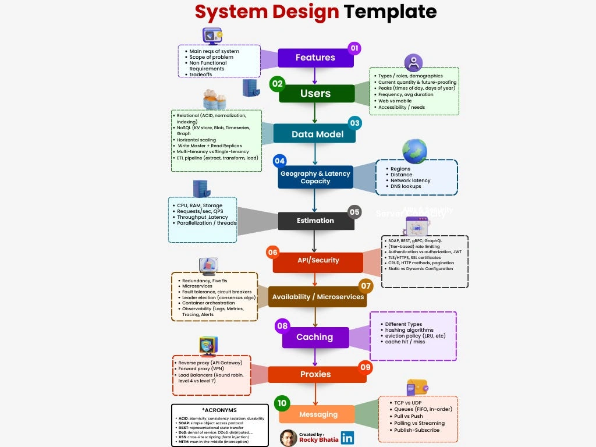
System design interviews can be daunting, but with the right preparation, you can confidently tackle even the most challenging questions. This guide focuses on the most critical system design topics to help you build scalable, resilient, and efficient systems. Whether you're designing for millions of users or preparing for your dream job, mastering these areas will give you the edge you need.
1. APIs (Application Programming Interfaces)
APIs are the backbone of communication between systems and applications, enabling seamless integration and data sharing. Designing robust APIs is critical for building scalable and maintainable systems.
Key Topics to Focus On:
- REST vs GraphQL: Understand when to use REST (simplicity, caching) versus GraphQL (flexibility, reduced over-fetching).
- API Versioning: Learn strategies for maintaining backward compatibility while rolling out new features.
- Authentication & Authorization: Implement secure practices using OAuth2, API keys, and JWT tokens.
- Rate Limiting: Prevent abuse by controlling the number of API calls using strategies like token bucket or quota systems.
- Pagination: Handle large datasets efficiently with offset, cursor-based, or keyset pagination.
- Idempotency: Design APIs to safely handle retries without unintended side effects.
- Monitoring and Logging: Implement tools for tracking API performance, errors, and usage.
- API Gateways: Explore tools like Kong, Apigee, or AWS API Gateway to manage APIs at scale, including traffic routing, throttling, and caching.
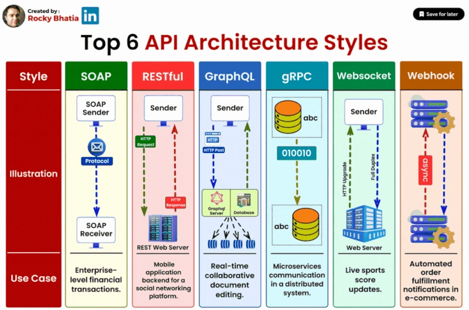
2. Load Balancer
A load balancer ensures high availability and scalability in distributed systems by distributing traffic across multiple servers. Mastering load balancers will help you design resilient systems.
Key Topics to Focus On:
- Types of Load Balancers: Understand Application Layer (L7) and Network Layer (L4) load balancers and their specific use cases. Application load balancers are suited for HTTP traffic and can route based on content, while network load balancers are faster and operate at the connection level.
- Algorithms: Familiarize yourself with common algorithms like Round Robin (evenly distributes requests), Least Connections (sends requests to the server with the fewest active connections), and IP Hashing (routes requests based on client IP).
- Health Checks: Learn how to monitor server availability using ping, HTTP checks, or custom scripts, and reroute traffic from unhealthy servers to healthy ones.
- Sticky Sessions: Explore how to maintain user session consistency by tying sessions to specific servers, using cookies or server configurations.
- Scaling Strategies: Differentiate between horizontal scaling (adding more servers to the pool) and vertical scaling (adding more resources to an existing server). Explore auto-scaling techniques and thresholds.
- Global Load Balancers: Manage traffic across multiple regions with DNS-based routing, latency-based routing, and failover mechanisms.
- Reverse Proxy: Understand its gateway functionality, including caching, SSL termination, and security benefits such as hiding internal server details.
3. Database (SQL vs NoSQL)
Database design and optimization are crucial in system design. Knowing how to choose and scale databases is vital.
Key Topics to Focus On:
- SQL vs NoSQL: Understand differences in schema design, query languages, and scalability. SQL databases (MySQL, PostgreSQL) offer strong ACID compliance, while NoSQL databases (MongoDB, Cassandra) provide flexibility and are better for unstructured data.
- Sharding & Partitioning: Learn techniques for distributing data, such as range-based, hash-based, and directory-based partitioning, and how to implement them.
- Replication: Study setups like Primary-Secondary (read replicas) and Multi-Master (for high write availability) replication and their trade-offs.
- Consistency Models: Dive into Strong Consistency (all nodes agree on data updates immediately) vs Eventual Consistency (updates propagate over time). Understand CAP theorem’s implications.
- Indexing: Optimize database queries with proper indexing strategies (single-column, composite, or full-text indexing) to speed up lookups.
- Caching: Accelerate read operations with external caching layers (Redis or Memcached) and explore read-through and write-back caching strategies.
- Backup & Recovery: Plan failover mechanisms with hot backups, cold backups, and snapshot-based recovery to ensure data availability.
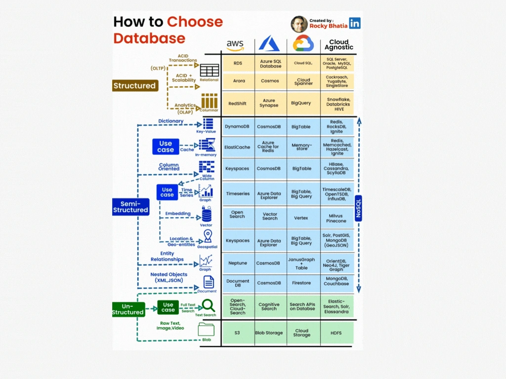
4. Application Server
The application server is the backbone of modern distributed systems. Its ability to handle client requests and business logic is critical to system performance and reliability.
Key Topics to Focus On:
- Stateless vs Stateful Architecture: Learn trade-offs between stateless systems (easier scaling, no session dependency) and stateful systems (session persistence but complex scaling).
- Caching Mechanisms: Compare in-memory solutions like Redis (supports data structures and persistence) and Memcached (simple key-value store) against local caching for reducing database load.
- Session Management: Analyze the pros and cons of cookies (state stored on the client) versus JWT tokens (self-contained, scalable, and stateless session management).
- Concurrency: Understand threading models, thread pools, and async handling (using async/await or event-driven frameworks) to handle high concurrent requests.
- Microservices Architecture: Delve into service discovery mechanisms like Consul and Eureka, inter-service communication patterns (REST, gRPC, or message brokers), and resiliency patterns like circuit breakers.
- Containerisation: Explore Docker for lightweight application containers and Kubernetes for orchestrating deployments, scaling, and updates in microservices.
- Rate Limiting: Implement strategies such as token bucket or leaky bucket algorithms to manage traffic, prevent abuse, and ensure fair usage.
5. Pub-Sub or Producer-Consumer Patterns
Messaging systems enable communication in distributed environments. Understanding these patterns is essential for designing event-driven architectures.
Key Topics to Focus On:
- Messaging Patterns: Differentiate between Pub-Sub (one-to-many communication) and Queue-based (one-to-one communication) systems for real-time vs batch processing.
- Message Brokers: Compare Kafka (distributed, durable, and scalable), RabbitMQ (lightweight and supports complex routing), and AWS SQS/SNS (managed solutions).
- Idempotency: Ensure reliable processing by avoiding duplicate operations using unique identifiers or deduplication logic.
- Durability & Ordering: Learn about persistent storage of messages for durability and how brokers like Kafka maintain message order.
- Dead Letter Queues: Use DLQs to store messages that fail after maximum retries for debugging and reprocessing.
- Scaling: Implement consumer groups in Kafka or parallel consumers in RabbitMQ for processing high-throughput messages.
- Eventual Consistency: Design patterns for asynchronous updates while maintaining consistency across distributed systems.
6. Content Delivery Network (CDN)
CDNs optimize content delivery by reducing latency and improving load times for users across the globe.
Key Topics to Focus On:
- Basics of CDNs: Understand how edge caching reduces latency and enhances user experience by delivering content from servers closer to the user.
- Caching Policies: Study TTL (Time-To-Live) settings for cached objects and how to handle content invalidation for updates.
- Geolocation Routing: Deliver content from the nearest data centre for speed and efficiency using geolocation-based routing.
- Static vs Dynamic Content: Optimise delivery for static content (images, videos, scripts) using caching and learn techniques to accelerate dynamic content delivery.
- SSL/TLS: Ensure secure communication by offloading SSL termination to CDNs and supporting modern protocols like HTTP/2.
- Load Handling: Handle traffic spikes gracefully with CDN’s elastic scaling capabilities.
- DDoS Protection: Protect your system from volumetric attacks with CDN’s built-in security features like rate limiting, bot filtering, and WAF (Web Application Firewall).
Conclusion
System design is not just about building software; it’s about crafting experiences that are scalable, reliable, and delightful for users. The topics outlined here are prioritized to help you focus on the most impactful areas first. Dive deep into these concepts, practice applying them to real-world scenarios, and you’ll be well-equipped to ace your interviews and design systems that stand the test of time.

🚀 Intro: Why Instagram’s system design is worth studying
Instagram isn’t just a photo-sharing app. It’s a hyper-scale social network, serving:
- Over 2 billion users monthly,
- Hundreds of millions of posts daily,
- Billions of feed views, likes, comments, and stories each day.
Yet it remains lightning fast and almost always available, even under massive load.
Studying Instagram’s architecture gives you practical lessons on:
✅ How to architect for extreme read/write
scalability (through fan-out, caching, sharding).
✅ How to
balance consistency vs
performance for feeds &
notifications.
✅ How to
use asynchronous
pipelines to keep user experience smooth,
offloading heavy tasks like video processing.
✅ How CDNs
and edge caching slash latency and costs.
It’s a masterclass in building resilient, high-throughput, low-latency distributed systems.
📌 1. Requirements & Estimations
✅ Functional Requirements
- Users should be able to sign up, log in, and maintain profiles.
- Users can upload photos & videos with captions.
- Users can follow/unfollow other users.
- Users should see a personalized feed of posts from accounts they follow, ranked by relevance.
- Users can like, comment, and share posts.
- Users can view ephemeral stories, disappearing after 24 hours.
- Notifications for likes/comments/follows.
🚀 Non-Functional Requirements
- High availability: Instagram can’t afford downtime; target 99.99%.
- Low latency: Feed loads in under 200ms globally.
- Scalability: System should handle hundreds of millions of DAUs generating billions of reads and writes daily.
- Eventual consistency: It’s acceptable for a slight delay in seeing new posts or likes.
- Durability: No data loss on photos/videos.
📊 Estimations & Capacity Planning
Let’s break this down using realistic assumptions to size our system.
📅 Daily Active Users (DAUs)
- Assume 500 million DAUs.
📷 Posts
- Average 1 photo/video post per user per day.
- ➔ 500M posts/day.
📰 Feed Reads
- Assume each user opens the app 10 times/day.
- Each time loads the feed.
➔ 5 billion feed reads/day.
💬 Likes & Comments
- Each user likes 20 posts/day and comments 2 times/day.
➔ 10 billion likes/day, 1 billion comments/day.
💾 Storage
- Average photo = 500 KB, video = 5 MB (average across formats).
- If 70% are photos, 30% are short videos, blended avg ≈ 1.5 MB/post.
➔ 500M posts/day × 1.5MB = 750 TB/day
- Retained indefinitely = petabytes scale storage.
🔥 Throughput
- Write-heavy ops:
- 500M posts/day ➔ ≈ 6,000 writes/sec.
- 10B likes/day ➔ ≈ 115,000 writes/sec.
- Read-heavy ops:
- 5B feed reads/day ➔ ≈ 58,000 reads/sec.
Peak hour traffic typically 3x average, so we design for:
- ~20,000 writes/sec for posts
- ~350,000 writes/sec for likes/comments
- ~175,000 feed reads/sec.
🔍 Derived requirements
ResourceEstimated LoadPosts DB6K writes/sec, PB-scale storageFeed service175K reads/secLikes/comments DB350K writes/sec, heavy fan-outsMedia store~750 TB/day ingest, geo-cachedNotifications~100K events/sec on Kafka
🚀 2. API Design
Instagram is essentially a social network with heavy content feed, so most APIs revolve around:
- User management
- Posting content
- Fetching feeds
- Likes & comments
- Stories
- Notifications
Below, we’ll design REST-like APIs, though in production Instagram also uses GraphQL for flexible client-driven queries.
🔐 Authentication APIs
POST /signup
Register a new user.
json
CopyEdit
{ "username": "rocky.b", "email": "rocky@example.com", "password": "securepassword" }
Returns:
json
CopyEdit
{ "user_id": "12345", "token": "JWT_TOKEN" }
POST /login
Authenticate user, return JWT session.
json
CopyEdit
{ "username": "rocky.b", "password": "securepassword" }
Returns:
json
CopyEdit
{ "token": "JWT_TOKEN", "expires_in": 3600 }
👤 User profile APIs
GET /users/{username}
Fetch public profile info.
Returns:
json
CopyEdit
{ "user_id": "12345", "username": "rocky.b", "bio": "Tech + Systems.", "followers_count": 450, "following_count": 200, "profile_pic_url": "https://cdn.instagram.com/..." }
POST /users/{username}/follow
Follow or unfollow user.
json
CopyEdit
{ "action": "follow" // or "unfollow" }
Returns: HTTP 200 or error.
📷 Post APIs
POST /posts
Create a new photo/video post.
(Multipart upload — image/video, plus
JSON metadata)
json
CopyEdit
{ "caption": "Building systems is fun", "tags": ["systemdesign", "ai"] }
Returns:
json
CopyEdit
{ "post_id": "67890" }
GET /posts/{post_id}
Fetch a single post.
json
CopyEdit
{ "post_id": "67890", "user": {...}, "media_url": "...", "caption": "...", "likes_count": 1530, "comments_count": 55, "created_at": "2025-07-03T12:00:00Z" }
POST /posts/{post_id}/like
Like/unlike a post.
json
CopyEdit
{ "action": "like" }
Returns: HTTP 200.
GET /posts/{post_id}/comments
Fetch comments on a post.
Returns:
json
CopyEdit
[ { "user": {...}, "text": "Awesome!", "created_at": "2025-07-03T12:30:00Z" }, ... ]
📰 Feed APIs
GET /feed
Personalized feed for current user.
- Could support ?limit=20&after_cursor=... for pagination.
Returns:
json
CopyEdit
[ { "post_id": "67890", "user": {...}, "media_url": "...", "caption": "...", "likes_count": 1530, "comments_count": 55, "created_at": "2025-07-03T12:00:00Z" }, ... ]
🕒 Stories APIs
POST /stories
Upload a story (ephemeral).
json
CopyEdit
{ "media_url": "...", "expires_in": 86400 }
GET /stories
Get stories from people the user follows.
🔔 Notification APIs
GET /notifications
List user notifications (likes, comments, follows).
Returns:
json
CopyEdit
[ { "type": "like", "by_user": {...}, "post_id": "67890", "created_at": "2025-07-03T13:00:00Z" }, ... ]
⚖️ Design considerations
- Use JWT or OAuth tokens for auth.
- Rate limit per IP/user on all write endpoints to prevent spam (e.g. max 10 likes/sec).
- GraphQL alternative:
Instagram uses GraphQL heavily for clients to fetch exactly what fields they need in feed or profile views — reduces over-fetching and allows mobile flexibility.
🗄️ 3. Database Schema & Indexing
⚙️ Core strategy
Instagram is read-heavy, but also requires huge write throughput (posting, likes, comments) and needs efficient fan-out for feeds.
- Primary data store: Sharded Relational DB (like MySQL) for user, post, comment data.
- Secondary data store: Wide-column store (like Cassandra) for timelines & feeds (optimized for fast reads).
- Specialized indexes: ElasticSearch for search, plus Redis for hot caching.
📜 Key Tables & Schemas
👤 users table
ColumnTypeNotesuser_idBIGINT PKSharded by consistent hashusernameVARCHARUNIQUE, indexedemailVARCHARUNIQUE, indexedpassword_hashVARCHARStored securelybioTEXTprofile_picVARCHARURL to blob storecreated_atDATETIME
Indexes:
- UNIQUE INDEX username_idx (username)
- UNIQUE INDEX email_idx (email)
📷 posts table
ColumnTypeNotespost_idBIGINT PKuser_idBIGINTIndexed, for author lookupscaptionTEXTmedia_urlVARCHARPoints to blob storagemedia_typeENUM(photo, video)created_atDATETIME
Indexes:
- INDEX user_posts_idx (user_id, created_at DESC) for user profile pages.
💬 comments table
ColumnTypeNotescomment_idBIGINT PKpost_idBIGINTIndexeduser_idBIGINTCommentertextTEXTcreated_atDATETIME
Indexes:
- INDEX post_comments_idx (post_id, created_at ASC)
❤️ likes table
ColumnTypeNotespost_idBIGINTuser_idBIGINTWho likedcreated_atDATETIME
PK: (post_id, user_id) (so no duplicate
likes)
Secondary:
- INDEX user_likes_idx (user_id)
👥 followers table
ColumnTypeNotesuser_idBIGINTThe user being followedfollower_idBIGINTWho follows themcreated_atDATETIME
PK: (user_id, follower_id)
Secondary:
- INDEX follower_idx (follower_id)
This helps:
- Find who a user follows (WHERE follower_id = X)
- Or who follows a user (WHERE user_id = Y)
📰 feed_timeline table (Wide-column DB like Cassandra)
This is precomputed for fast feed reads.
Partition KeyClustering ColumnsValuesuser_idcreated_at DESCpost_id
This design:
- Partition by user_id to keep all a user’s feed together.
- Cluster by created_at DESC to allow efficient paging.
Fetching feed =
sql
CopyEdit
SELECT post_id FROM feed_timeline WHERE user_id = 12345 ORDER BY created_at DESC LIMIT 20;
🔔 notifications table
ColumnTypeNotesnotif_idBIGINT PKuser_idBIGINTWho receives this notiftypeENUM(like, comment, follow)by_user_idBIGINTWho triggered the notifpost_idBIGINT NULLFor post contextcreated_atDATETIME
Index:
- INDEX user_notif_idx (user_id, created_at DESC)
📂 Special indexing considerations
✅ Sharding:
- Users, posts, comments tables are sharded by user_id using consistent hashing.
- Ensures balanced distribution & avoids hot spots.
✅ Follower relationships:
- Indexed both by user_id and follower_id to support both “who do I follow” and “who follows me” efficiently.
✅ Feed timelines:
- Stored in Cassandra for high-volume writes and fast sequential reads.
✅ ElasticSearch:
- Separate index on username, hashtags, captions for full-text & partial matching.
✅ Hot caches:
- Redis stores pre-rendered user profiles & top feed pages for milliseconds-level reads.
🏗️ 4. High-Level Architecture (Explained)
🔗 1. DNS & Client
- When you open the Instagram app or website, it resolves the DNS to find the closest Instagram server cluster.
- It uses Geo DNS to route your request to the nearest data center, improving latency.
⚖️ 2. Load Balancer
- The load balancer receives incoming HTTP(S) requests from clients.
- Distributes them to multiple API Gateways, ensuring:
- No single server is overwhelmed.
- Requests are routed efficiently to regions with capacity.
🚪 3. API Gateway
- Instagram typically runs multiple API Gateways, separating concerns:
- API Gateway 1: optimized for read-heavy traffic (feeds, comments, likes counts, profile views).
- API Gateway 2: optimized for write-heavy traffic (posting, likes, comments inserts).
- API Gateways handle:
- Authentication (JWT tokens or OAuth).
- Basic rate limiting.
- Request validation & routing.
🚀 4. App Servers
App Server (Read)
- Handles:
- Fetching user feeds (list of posts).
- Getting comments on a post.
- Loading user profiles.
- Talks to:
- Metadata DB to fetch structured data.
- Cache layer for ultra-low-latency fetches.
- Search systems for queries.
App Server (Write)
- Handles:
- New posts, likes, comments, follows.
- Publishes tasks to:
- Feed Generation Queue (to fan out posts to followers).
- Video Processing Queue (for transcoding media).
📝 5. Cache Layer
- Uses Redis or Memcached clusters to speed up reads.
- Examples:
- feed:user:1234 → cached list of post IDs for the feed.
- profile:rocky.b → cached profile metadata.
- Also used for search hot results caching.
🗄️ 6. Metadata Databases
- Typically sharded MySQL or PostgreSQL clusters.
- Directory Based Partitioning: users are partitioned by a consistent hash of user_id to evenly distribute load.
- Stores:
- Users, posts, comments, followers data.
- Managed by a Shard Manager service that maps user_id -> DB shard.
🔍 7. Search Index & Aggregators
- Uses ElasticSearch for:
- Username lookups.
- Hashtag queries.
- Trending discovery.
- Separate search aggregators fetch results from multiple shards and combine.
📺 8. Media (Blob Storage & Processing)
- Photos & videos are uploaded to Blob Storage (like S3, Google Cloud Storage, or Instagram’s own blob infra).
- Processed by Video/Image Processing Service:
- Generates multiple resolutions.
- Extracts thumbnails.
- Watermarking or tagging (if required).
- Processing is done asynchronously by a pool of workers, consuming from the Video Processing Queue.
📰 9. Feed Generation Service
- New posts are published to the Feed Generation Queue.
- Feed workers pick these up, update follower timelines in the database or cache.
- Ensures that when followers open their feed, new posts are already visible.
🔔 10. Notification Service
- Likes, comments, follows generate events to the Notification Queue.
- Notification workers consume these, write to a notifications table.
- Also sends real-time push notifications via APNs / FCM.
🌍 11. CDN
- All static assets (images, videos, CSS/JS for web) are served via a Content Delivery Network (CDN).
- Ensures global users fetch media from the nearest edge server.
🔁 12. Retry & Resilience Loops
- Most queues have built-in retry for failed tasks.
- Periodic health checks, circuit breakers on downstream services to maintain reliability.
✅ That’s the complete high-level architecture breakdown, directly aligned to your diagram, explained in the same stepwise style you’d see on systemdesign.one.
📰 5. Detailed Feed Generation Pipeline & Fan-out vs Fan-in
🚀 Why is this hard?
Instagram’s feed is arguably the most demanding feature in their architecture:
- It must support billions of reads/day, each personalized.
- Also support hundreds of millions of new posts/day that must appear in followers’ feeds almost instantly.
Doing this with strong consistency would overwhelm the system. So Instagram engineers carefully balance consistency, freshness, latency, and cost.
⚙️ Fan-out vs Fan-in
🔄 Fan-out on write
What:
- When a user posts, the system immediately pushes a reference of that post into all followers’ feed timelines (like inserting into feed_timeline wide-column table).
Pros:
✅ Extremely fast
feed reads — each
user’s timeline is prebuilt.
✅ No need to join multiple tables at read
time.
Cons:
❌ Massive write
amplification. A post by a celebrity with 100M followers = 100M
writes.
❌ Slower writes.
❌ Risk of burst load on feed DB.
🔍 Fan-in on read
What:
- When a user opens their feed, the app dynamically queries all people they follow and aggregates their posts.
Pros:
✅ Simple writes
— just insert one post record.
✅ No write amplification.
Cons:
❌ Slow feed reads
(lots of joins across many partitions).
❌ Hard to rank or apply ML scoring across
distributed data.
🚀 Hybrid approach (what Instagram uses)
- Fan-out on write for typical users.
- When you post, it writes references into ~500-1000 followers’ feed timelines.
- Ensures reads are lightning fast.
- Fan-in on read for celebrities & large accounts.
- For example, a post from an account with 100M followers isn’t fanned out.
- Instead, when a user opens their feed, the system dynamically pulls these “hot posts” and merges.
This balances the write load and avoids explosion of writes for massive accounts.
🏗️ Feed Generation Pipeline (Step-by-Step)
1️⃣ Post is created
- User makes a new post → hits Write App Server → inserts into posts table.
- Simultaneously, a Kafka event is published:
CopyEdit
- { user_id, post_id, created_at }
2️⃣ Feed Generation Queue
- This Kafka message is picked by Feed Generation Service.
- Looks up the followers list from followers table (can be sharded, cached).
3️⃣ Writes to Feed Timeline
- For normal users:
- Feed service writes small records to feed_timeline table for each follower:
makefile
- CopyEdit
user_id: Follower1 -> post_id, created_at user_id: Follower2 -> post_id, created_at ...
- This populates the feed ahead of time.
- For large accounts:
- Simply marks the post as “hot,” skips massive fan-out.
4️⃣ Caching & Ranking
- Each user’s feed (say top 100 posts) is cached in Redis:
makefile
- CopyEdit
feed:user:12345 -> [post_id1, post_id2, ...]
- Cache may include precomputed ML scores or sort order.
- When a user opens the app, it pulls from this cache, reducing DB hits.
5️⃣ Feed API response
- GET /feed fetches post IDs from cache.
- App Server then batches lookups to posts table to retrieve media & captions.
- Also merges with hot celebrity posts pulled via on-demand fan-in.
🧠 Re-ranking with ML
- Instagram doesn’t just show chronological.
- They use a lightweight ML model at request time to adjust order:
- Your past interactions
- Freshness
- Content type preferences
This final sort happens in-memory before the feed is returned.
⚖️ Trade-offs & safeguards
StrategyProsConsFan-outFast readsHeavy writesFan-inLight writesSlow reads for many followsHybridBalancedMore infra complexity
- To prevent cache stampedes, they use randomized TTLs on Redis keys.
- For celebrity posts, they often appear slightly delayed vs normal posts, to maintain system stability.
🎥 6. Media Handling & CDN Strategy
🌐 Why this matters
Instagram’s value is visual content. Images & videos drive engagement, but they also create huge challenges:
- Massive volume: Hundreds of millions of photos/videos uploaded daily.
- Latency: Users expect instant uploads & quick playback.
- Bandwidth & device constraints: Must work on 2G in India as well as 5G in the US.
- Cost: Optimizing storage & delivery saves millions.
So Instagram uses a carefully architected asynchronous pipeline with multi-tiered storage & CDN caching.
🚀 Image/Video Upload Pipeline
1️⃣ Upload initiation
- When you select an image/video and hit post:
- The client generates thumbnails locally (for immediate UI feedback).
- Makes a POST /posts API call with caption, tags, etc.
2️⃣ Direct upload to blob store
- Instead of routing large files through app servers (which would choke them), Instagram gives the client a pre-signed URL (e.g. from S3 or internal blob system).
- Client uploads directly to blob store.
✅ This bypasses API server bandwidth constraints.
3️⃣ Metadata record creation
- Once the upload is complete, the client notifies Instagram (via API).
- App server then creates a record in the posts table:
less
- CopyEdit
post_id | user_id | caption | media_url | created_at
- Media is initially marked as processing.
🏗️ 4️⃣ Asynchronous transcoding
- A Kafka event (or similar queue) is published:
CopyEdit
- { post_id, media_url, media_type }
- Video/Image Processing Service picks up the task:
- Generates multiple resolutions & bitrates:
- 1080p, 720p, 480p for video
- Low/medium/high for images
- Extracts key frames, creates preview thumbnails.
- Runs compression pipelines to reduce size.
- Final files are stored back in blob storage.
5️⃣ Media URL replacement
- Once transcoding is complete, the service updates the posts DB row to:
- Set status = ready.
- Insert links to processed files.
- Feed service & client now serve these optimized URLs.
🗄️ Blob Storage & Lifecycle
Storage architecture
- Uses hot + cold blob storage tiers to balance speed & cost.
TierUseExampleHotRecent uploads, frequent accessSSD-backed S3 / internal hot tierColdOlder content, less accessedGlacier / internal cold blob infra
- Periodic background jobs migrate old posts to cold tier.
Durability
- Instagram ensures 11 9s durability (99.999999999%) by replicating across availability zones.
- Metadata DB always stores references to all media files.
🌍 Global CDN Strategy
Why use CDN?
- Users in India shouldn’t have to fetch images from the US.
- CDN caches content near users, reducing latency & ISP transit costs.
Typical flow
- When client requests an image/video URL, it hits the CDN first (like Akamai, Fastly, or Meta’s own edge servers).
- If content is cached on edge, served instantly (50-100ms).
- If not cached (cache miss), edge pulls from blob storage, caches it for next users.
Cache tuning
- Instagram uses variable TTLs:
- Popular stories: 1-2 mins
- Feed posts: 1 hour
- Profile pictures: 24 hours
- Hot content gets pinned on edge nodes to survive TTL expiration.
Adaptive delivery
- CDN or client decides what resolution to fetch based on:
- Screen size
- Network quality (4G vs 2G)
- Instagram also employs lazy loading & progressive JPEGs for feed scrolls.
🛡️ Safeguards & costs
- Upload services throttle large video uploads to protect processing pipeline.
- Blobs are encrypted at rest + in transit (TLS).
- Using CDN reduces origin traffic by 90-95%, massively cutting blob storage egress costs
🏆 Summary: How it all comes together
At its core, Instagram solves a deceptively hard problem:
“How do you deliver personalized, fresh visual content to billions of people in under 200ms, without exploding your infrastructure costs?”
Their solution is an elegant composition of proven patterns:
✅ Microservices split by read & write loads,
with API gateways optimized for different traffic.
✅ Sharded relational
DBs for core data (users, posts,
comments), and wide-column DBs (like Cassandra) for
precomputed feed timelines.
✅ Redis &
Memcached to serve hot feeds &
profiles in milliseconds.
✅ Kafka + async
workers for decoupling heavy operations
like fan-outs & video processing.
✅ Blob storage +
CDN to make sure photos & videos load
instantly, anywhere.
✅
ML-based ranking
pipelines that personalize feeds on the
fly.
All glued together with robust monitoring, auto-retries, and chaos testing to ensure resilience.
Netflix is a prime example of a highly scalable and resilient distributed system. With over 260 million subscribers globally, Netflix streams content to millions of devices, ensuring low latency, high availability, and seamless user experience. But how does Netflix achieve this at such an enormous scale? Let’s dive deep into its architecture, breaking down the key technologies and design choices that power the world’s largest streaming platform.
1. Microservices and Distributed System Design
Netflix follows a microservices-based architecture, where independent services handle different functionalities, such as:
- User Authentication – Validates and manages user accounts, including password resets, MFA, and session management.
- Content Discovery – Powers search, recommendations, and personalized content using real-time machine learning models.
- Streaming Service – Manages video delivery, adaptive bitrate streaming, and content buffering to ensure smooth playback.
- Billing and Payments – Handles subscriptions, regional pricing adjustments, and fraud detection.
Each microservice runs independently and communicates via APIs, ensuring high availability and scalability. This architecture allows Netflix to roll out updates seamlessly, preventing single points of failure from affecting the entire system.
Why Microservices?
- Scalability: Each service scales independently based on demand.
- Resilience: Failures in one service do not bring down the entire system.
- Rapid Development: Teams can work on different services simultaneously without dependencies slowing them down.
- Global Distribution: Services are deployed across multiple AWS regions to reduce latency.
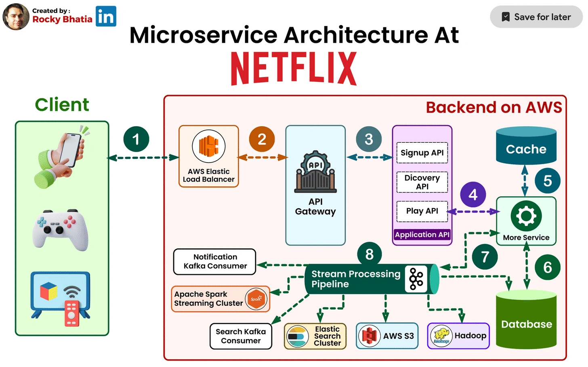
2. Netflix’s Cloud Infrastructure – AWS at Scale
Netflix operates entirely on Amazon Web Services (AWS), leveraging the cloud for elasticity and reliability. Some key AWS services powering Netflix include:
- EC2 (Elastic Compute Cloud): Provides scalable virtual machines for compute-heavy tasks like encoding and data processing.
- S3 (Simple Storage Service): Stores video assets, user profiles, logs, and metadata.
- DynamoDB & Cassandra: NoSQL databases for storing user preferences, watch history, and metadata, ensuring low-latency reads and writes.
- AWS Lambda: Runs serverless functions for lightweight, event-driven tasks such as real-time analytics and log processing.
- Elastic Load Balancing (ELB): Distributes incoming traffic efficiently across multiple microservices and prevents overload.
- Kinesis & Kafka: Event streaming platforms for real-time data ingestion, powering features like personalized recommendations and A/B testing.
Netflix’s cloud-native approach allows it to rapidly scale during peak traffic (e.g., when a new show drops) and ensures automatic failover in case of infrastructure issues.
3. Content Delivery at Scale – Open Connect
A core challenge for Netflix is streaming high-quality video to users without buffering or delays. To solve this, Netflix built its own Content Delivery Network (CDN) called Open Connect. Instead of relying on third-party CDNs, Netflix places cache servers (Open Connect Appliances) in ISPs’ data centers, bringing content closer to users.
Benefits of Open Connect:
- Lower Latency: Content is streamed from local ISP servers rather than distant cloud data centers.
- Reduced ISP Bandwidth Usage: By caching popular content closer to users, Netflix reduces congestion on internet backbone networks.
- Optimized Streaming Quality: Ensures 4K and HDR content delivery with minimal buffering.
Netflix’s edge caching approach significantly improves the user experience while cutting costs on bandwidth-heavy cloud operations.
4. Netflix’s Tech Stack – From Frontend to Streaming Infrastructure
Netflix employs a vast and robust tech stack covering frontend, backend, databases, streaming, and CDN services.
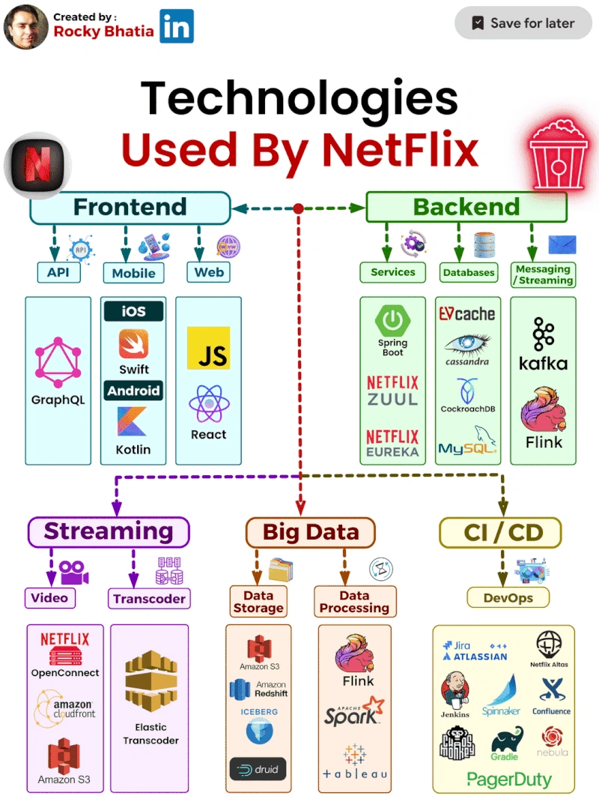
Frontend Technologies:
- React.js & Node.js – The Netflix UI is built using React.js for dynamic rendering, with Node.js supporting server-side rendering.
- Redux & RxJS – For state management and handling asynchronous data streams.
- GraphQL & Falcor – Efficient data-fetching mechanisms to optimize API responses.
Backend Technologies:
- Java & Spring Boot – Most microservices are built using Java with Spring Boot.
- Python & Go – Used for various backend services, especially in machine learning and observability tools.
- gRPC & REST APIs – High-performance communication between microservices.
Databases & Storage:
- DynamoDB & Cassandra – NoSQL databases for user preferences, watch history, and metadata storage.
- MySQL – Used for transactional data such as billing and payments.
- S3 & EBS (Elastic Block Store) – For storing logs, metadata, and assets.
Event-Driven Architecture:
- Apache Kafka & AWS Kinesis – Handles event streaming, real-time analytics, and log processing.
Streaming Infrastructure:
- FFmpeg – Used for video encoding and format conversion.
- VMAF (Video Multi-Method Assessment Fusion) – Netflix’s AI-powered quality assessment tool to optimize streaming quality.
- DASH & HLS Protocols – Adaptive bitrate streaming protocols to adjust video quality dynamically.
Content Delivery – Open Connect CDN:
Netflix has built its own CDN (Content Delivery Network), Open Connect, which:
- Deploys dedicated caching servers at ISP locations.
- Reduces network congestion and improves video streaming quality.
- Uses BGP routing to optimize data transfer to end users.
Observability & Performance Monitoring:
- Atlas – Netflix’s real-time telemetry platform.
- Eureka – Service discovery tool for microservices.
- Hystrix – Circuit breaker for handling failures.
- Zipkin – Distributed tracing to analyze request flow across services.
- Spinnaker – Manages multi-cloud deployments.
Security & Digital Rights Management (DRM):
- Widevine, PlayReady, and FairPlay DRM – To protect digital content from piracy.
- Token-Based Authentication – Ensures secure API calls between microservices.
- AI-powered Fraud Detection – Uses machine learning to prevent credential stuffing and account sharing abuse.
5. Resilience and Fault Tolerance – Chaos Engineering
Netflix ensures high availability using Chaos Engineering, a discipline where failures are deliberately introduced to test system resilience. Their famous Chaos Monkey tool randomly shuts down services to verify automatic recovery mechanisms. Other tools in their Simian Army include:
- Latency Monkey: Introduces artificial delays to simulate network slowdowns.
- Conformity Monkey: Detects non-standard or misconfigured instances and removes them.
- Chaos Gorilla: Simulates the failure of entire AWS regions to test system-wide resilience.
Why Chaos Engineering?
Netflix must be prepared for unexpected failures, whether caused by network issues, cloud provider outages, or software bugs. By proactively testing failures, Netflix ensures that users never experience downtime.
6. Personalisation & AI – The Brain Behind Netflix Recommendations
Netflix’s recommendation engine is powered by Machine Learning and Deep Learning algorithms that analyze:
- Watch history – What users have previously watched.
- User interactions – Browsing behavior, pauses, skips, and rewatches.
- Content metadata – Genre, actors, directors, cinematography styles, and even scene compositions.
- Collaborative filtering – Finds similar users and suggests content based on shared preferences.
- Contextual Bandit Algorithms – A form of reinforcement learning that adjusts recommendations in real-time based on user feedback.
Netflix employs A/B testing at scale, ensuring that every UI change, recommendation tweak, or algorithm update is rigorously tested before a full rollout.
7. Observability & Monitoring – Tracking Millions of Events per Second
With millions of users watching content simultaneously, Netflix must track system performance in real time. Key monitoring tools include:
- Atlas – Netflix’s real-time telemetry platform for tracking system health.
- Eureka – Service discovery tool for routing traffic between microservices.
- Hystrix – Circuit breaker library to prevent cascading failures.
- Spinnaker – Automated deployment tool for rolling out software updates seamlessly.
- Zipkin – Distributed tracing tool to analyze request flow across microservices.
This observability stack allows Netflix to proactively detect anomalies, reducing the risk of performance degradation.
8. Security & Privacy – Keeping Netflix Safe
Netflix takes security seriously, implementing:
- End-to-End Encryption: Protects user data and streaming content from unauthorized access.
- Multi-Factor Authentication (MFA): Prevents account takeovers.
- Access Control & Role-Based Policies: Restricts employee access to sensitive services.
- DRM (Digital Rights Management): Prevents unauthorized content distribution through watermarking and encryption.
- Bot Detection & Fraud Prevention: Identifies and blocks credential stuffing attacks and account sharing abuse.
Final Thoughts – Why Netflix’s Architecture is a Gold Standard
Netflix’s ability to handle millions of concurrent users, deliver content with ultra-low latency, and recover from failures automatically is a testament to its world-class distributed system architecture. By leveraging cloud computing, microservices, machine learning, chaos engineering, and edge computing, Netflix has set the benchmark for high-scale applications.
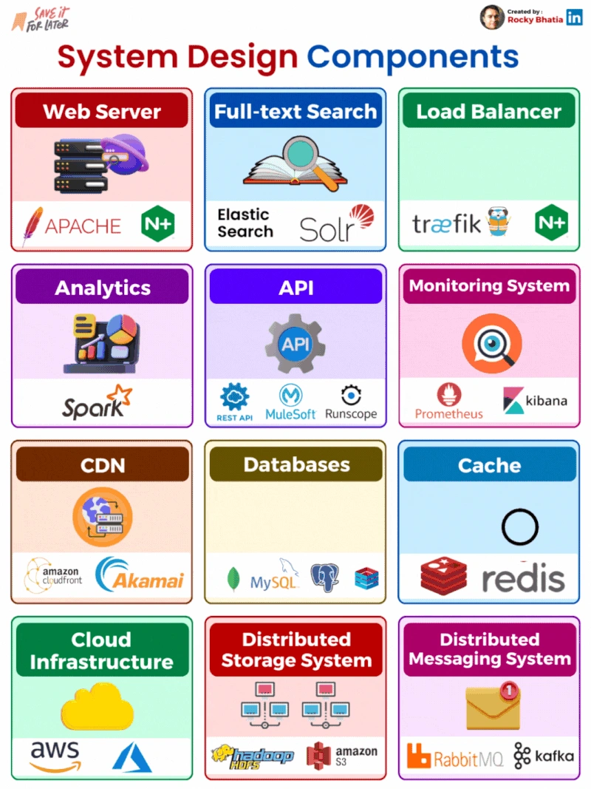
Welcome to the 181 new who have joined us since last edition!
System design can feel overwhelming.
But it doesn't have to be.
The secret?
Stop chasing buzzwords.
Start understanding how real
systems work — one piece at a time.
After 16+ years of working in tech, I’ve realized most engineers hit a ceiling not because of coding skills, but because they never learned to think in systems.
In this post, I’ll give you the roadmap I wish I had, with detailed breakdowns, examples, and principles that apply whether you’re preparing for an interview or building for scale.
📺 Prefer a Visual Breakdown?
I’ve put everything above into a step-by-step YouTube walkthrough with visuals and real-world examples.
✅ Key components
✅ Real-world case studies
✅ Interview insights
✅ What top engineers focus on
✅ Architecture patterns
🔹 Step 1: Master the Fundamentals
System design begins with mastering foundational concepts that are universal to distributed systems.
Let’s go beyond the surface:
1. Distributed Systems
A distributed system is a collection of independent machines working
together as one.
Most modern tech giants — Netflix, Uber, WhatsApp —
run on distributed architectures.
Challenges include:
- Coordination
- State consistency
- Failures and retries
- Network partitions
Real-world analogy:
A remote team working on a
shared document must keep in sync. Any update from one person must
reflect everywhere — just like nodes in a distributed system syncing
data.
2. CAP Theorem
The CAP Theorem says you can only pick two out of three:
- Consistency: All nodes return the same data.
- Availability: Every request gets a response.
- Partition Tolerance: System continues despite network failure.
Example:
- CP System (like MongoDB in default mode): Prioritizes consistency over availability.
- AP System (like Couchbase): Prioritizes availability, tolerates inconsistency.
Trade-offs matter. A payment system must be consistent. A messaging app can tolerate delays or eventual consistency.
3. Replication
Replication improves fault tolerance, availability, and read performance by duplicating data.
Types:
- Synchronous: Safer, but slower (waits for confirmation).
- Asynchronous: Faster, but at risk of data loss during failure.
Example:
Gmail stores your emails across multiple
data centers so they’re never lost — even if one server goes down.
4. Sharding
Sharding splits data across different servers or databases to handle scale.
Sharding strategies:
- Range-based (e.g., user A–F on one shard)
- Hash-based (distributes load evenly)
- Geo-based (user data stored by region)
Example:
Twitter shards tweets by user ID to
prevent one database from being a bottleneck for writes.
Complexity:
Sharding introduces cross-shard
queries, rebalancing, and metadata management — but is essential for
web-scale systems.
5. Caching
Caching reduces repeated computation and DB hits by storing precomputed or frequently accessed data in memory.
Types:
- Client-side: Browser stores assets
- Server-side: Redis or Memcached store DB results or objects
- CDN: Caches static files at edge locations
Example:
Reddit caches user karma and post scores
to avoid recalculating on every page load.
Challenges:
- Cache invalidation
- Choosing correct TTLs
- Preventing stale data from affecting correctness
🔹 Step 2: Understand Core Components
These components are the Lego blocks of modern system
design.
Knowing when and how to use them is the architect’s
superpower.
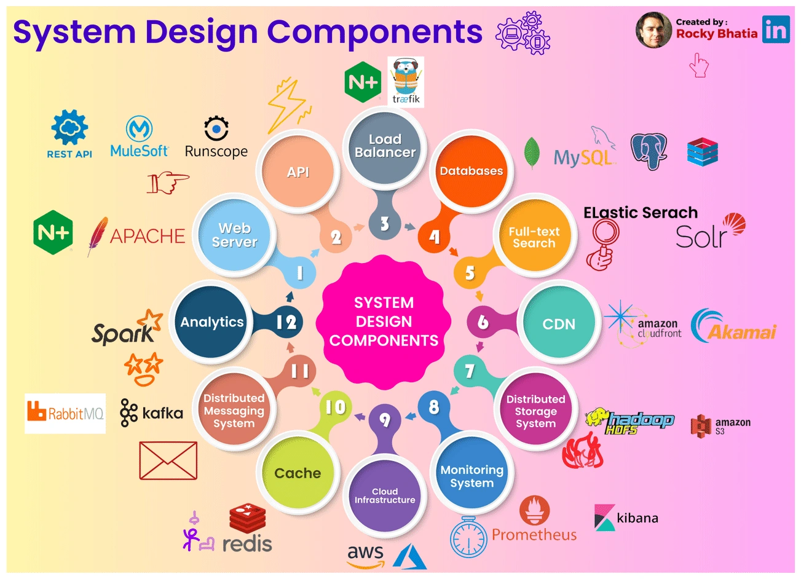
1. API Gateway
The entry point for all client requests in a microservices setup.
Responsibilities:
- Auth & token validation
- SSL termination
- Request routing
- Rate limiting & throttling
Example:
Netflix’s Zuul API Gateway routes
millions of requests per second and enforces rules like regional
restrictions or A/B testing.
2. Load Balancer
Distributes traffic evenly across servers to maximize availability and reliability.
Key benefits:
- Prevents any one server from overloading
- Supports horizontal scaling
- Enables health checks and failover
Example:
Amazon uses Elastic Load Balancers to
distribute checkout traffic across zones — ensuring consistent
performance even during Black Friday sales.
3. Database (SQL & NoSQL)
Both database types are useful — but for different needs.
SQL (PostgreSQL, MySQL):
- Great for transactional consistency (e.g., banking)
- Joins, constraints, ACID guarantees
NoSQL (MongoDB, Cassandra, DynamoDB):
- Schema flexibility
- High scalability
- Eventual consistency models
Example:
Facebook uses MySQL for social graph
relations and TAO (a NoSQL layer) for scalable reads/writes on user
feeds.
4. Cache Layer
A low-latency, high-speed memory layer (usually Redis or Memcached) that stores hot data.
Use cases:
- Session storage
- Leaderboards
- Search autocomplete
- Expensive DB joins
Example:
Pinterest uses Redis to cache user
boards, speeding up access by 10x while reducing DB load
significantly.
5. Message Queue
Enables asynchronous communication between services.
Why use it:
- Decouples producers and consumers
- Handles retries, failures, delays
- Smooths traffic spikes (buffering)
Popular tools:
- Kafka (high-throughput streams)
- RabbitMQ (complex routing)
- AWS SQS (fully managed)
Example:
Spotify uses Kafka to process billions
of logs and user events daily, which are then used for
recommendations and analytics.
6. Content Delivery Network (CDN)
A global layer of edge servers that serve static content from locations closest to the user.
Improves:
- Page load speed
- Media streaming quality
- Global availability
Example:
YouTube videos are cached across CDN
nodes worldwide, so when someone in Brazil presses “play,” it loads
from a nearby node — not from California.
Bonus:
CDNs often include DDoS protection and
analytics.
🔹 Step 3: Learn Architecture Patterns That Actually Scale

Architecture is not one-size-fits-all.
Choosing the right pattern
depends on team size, product stage, scalability needs, and performance
requirements.
Let’s look at a few patterns every engineer should understand.
1. Monolithic Architecture
All logic — UI, business, and data access — lives in a single codebase.
Pros:
- Easier to build and deploy initially
- Great for early-stage startups
- No network overhead
Cons:
- Harder to scale teams
- Tight coupling
- Difficult to adopt new tech in parts
Example:
Early versions of Instagram were
monoliths in Django and Postgres — simple, fast, effective.
2. Microservices Architecture
System is split into independent services, each owning its domain.
Pros:
- Independent deployments
- Better scalability
- Polyglot architecture (teams choose tech)
Cons:
- Complex networking
- Needs API gateway, service discovery, observability
- Cross-service debugging is hard
Example:
Amazon migrated to microservices to
allow autonomous teams to innovate faster. Each service communicates
over well-defined APIs.
3. Event-Driven Architecture
Services don’t call each other directly — they publish or subscribe to events.
Pros:
- Asynchronous processing
- Loose coupling
- Natural scalability
Cons:
- Event ordering issues
- Difficult to debug
- Requires strong observability
Example:
Uber’s trip lifecycle is event-driven:
request → accept → start → end. Kafka handles the orchestration of
millions of rides in real time.
4. Pub/Sub Pattern
Publishers send messages to a topic, and subscribers receive updates.
Use Cases:
- Notification systems
- Logging
- Analytics pipelines
Tools:
- Kafka, Google Pub/Sub, Redis Streams
Example:
Slack uses Pub/Sub internally to update
message feeds across devices instantly when a message is received.
5. CQRS (Command Query Responsibility Segregation)
Separate models for writing (commands) and reading (queries).
Why it’s useful:
- Optimizes read-heavy systems
- Allows different scaling strategies
- Reduces read-write contention
Example:
E-commerce apps use CQRS to process
orders (write) and show order history (read) via different services,
often with denormalized read models.
Sure! Here's a concise and impactful conclusion/summary for your Substack article:
🔚 Conclusion
Mastering system design isn't about memorizing diagrams or buzzwords — it's about understanding how systems behave, scale, and fail in the real world.
Start with the fundamentals: distributed systems,
replication, sharding, and caching.
Then, dive deep
into core components like API gateways, load balancers,
databases, caches, queues, and CDNs.
Finally, learn to apply the
right architecture patterns — from monoliths to
microservices, event-driven systems to CQRS.
Whether you're prepping for interviews or building production-grade apps,
always ask:
“What are the trade-offs?” and
“Where’s the bottleneck?”
Introduction to Caching
In the relentless pursuit of speed, where every millisecond shapes user experience and business outcomes, caching stands as the most potent weapon in a system’s arsenal. Caching is the art and science of storing frequently accessed data, computations, or responses in ultra-fast memory, ensuring they’re instantly available without the costly overhead of recomputing or fetching from slower sources like disks, databases, or remote services. By caching everything—from static assets like images and JavaScript to dynamic outputs like API responses and machine learning predictions—systems can slash latency from hundreds of milliseconds to mere microseconds, delivering near-instantaneous responses that users expect in today’s digital world.
Why Caching Matters
Caching is a fundamental technique in computer science and system design that significantly enhances the performance, scalability, and reliability of applications. By storing frequently accessed data in a fast, temporary storage layer, caching minimizes the need to repeatedly fetch or compute data from slower sources like disks, databases, or remote services.
1. Latency Reduction
Caching drastically reduces the time it takes to retrieve data by storing it in high-speed memory closer to the point of use. The latency difference between various storage layers is stark:
- CPU Cache (L1/L2): Access times are in the range of 1–3 nanoseconds.
- RAM (e.g., Redis, Memcached): Access times are around 10–100 microseconds.
- SSD: Access times are approximately 100 microseconds to 1 millisecond.
- HDD: Access times are in the range of 5–10 milliseconds.
- Network Calls (e.g., API or database queries over the internet): These can take 10–500 milliseconds, depending on network latency and server response times.
Example Scenarios:
- Redis Cache Hit: Retrieving a user session from Redis takes ~0.5ms, compared to a PostgreSQL query fetching the same data in ~50ms. For a high-traffic application with millions of users, this shaves seconds off cumulative response times.
- CDN Edge Caching: A content delivery network (CDN) like Cloudflare caches static assets (e.g., images, CSS, JavaScript) at edge locations worldwide. A user in Tokyo accessing a cached image might experience a 10ms latency, compared to 200ms if the request hits the origin server in the US.
- Browser Caching: Storing a webpage’s static resources in the browser cache eliminates round-trips to the server, reducing page load times from 1–2 seconds to under 100ms for subsequent visits.
Technical Insight:
Caching exploits the principle of locality (temporal and spatial), where recently or frequently accessed data is likely to be requested again. By keeping this data in faster storage layers, systems avoid bottlenecks caused by slower IO operations.
2. Reduced Load on Backend Systems
Caching acts as a buffer between the frontend and backend, shielding resource-intensive services like databases, APIs, or microservices from excessive requests. This offloading is critical for maintaining system stability under high load.
How It Works:
- Database Offloading: Caching frequently queried data (e.g., user profiles, product details) in an in-memory store like Redis or Memcached reduces database read operations.
- API Offloading: Caching API responses (e.g., weather data or stock prices) prevents repeated calls to external services, which often have rate limits or high latency.
- Compute Offloading: For computationally expensive operations like machine learning inferences or image rendering, caching results avoids redundant processing.
3. Improved Scalability
Caching enables systems to handle massive traffic spikes without requiring proportional increases in infrastructure. By serving data from cache, systems reduce the need for additional servers, databases, or compute resources.
Key Mechanisms:
- Horizontal Scaling with CDNs: CDNs like Akamai or Cloudflare distribute cached content across global edge servers, serving millions of users without hitting the origin server.
- In-Memory Caching: Tools like Redis or Memcached allow applications to scale horizontally by adding cache nodes, which are cheaper and easier to manage than scaling databases or compute clusters.
- Load Balancing with Caching: Caching at the application layer (e.g., Varnish for web servers) distributes load efficiently, allowing systems to scale to millions of requests per second.
4. Enhanced User Experience
Low latency and fast response times directly translate to a better user experience, which is critical for user retention and engagement. Caching ensures that applications feel responsive and seamless.
Technical Insight:
Caching aligns with the performance budget concept in web development, where every millisecond counts. Studies show that a 100ms delay in page load time can reduce conversion rates by 7%. Caching helps meet these stringent performance requirements.
5. Cost Efficiency
Caching reduces the need for expensive resources, such as high-performance databases, GPU compute, or frequent API calls, leading to significant cost savings in cloud environments.
Cost-Saving Scenarios:
- Database Costs: By caching query results, systems reduce database read operations, lowering costs for managed database services like AWS RDS or Google Cloud SQL.
- Compute Costs: Caching the output of machine learning models (e.g., recommendation systems or image processing) in memory avoids redundant GPU or TPU usage.
- API Costs: Caching responses from paid third-party APIs (e.g., Google Maps or payment gateways) reduces the number of billable requests.
Types of Caches
Caching can be implemented at every layer of the technology stack to eliminate redundant computations and data fetches, ensuring optimal performance. Each layer serves a specific purpose, leveraging proximity to the user or application to reduce latency and resource usage. Below is an in-depth look at the types of caches, their use cases, and advanced applications.
1. Browser Cache
The browser cache stores client-side resources, enabling instant access without network requests. It’s the first line of defense for web and mobile applications, reducing server load and improving user experience.
- What’s Cached: HTML, CSS, JavaScript, images, fonts, media files, API responses, and dynamic data (via Service Workers, localStorage, or IndexedDB).
- Performance Impact: Using HTTP headers like Cache-Control: max-age=86400 or ETag, browsers can serve entire web pages or assets in 0–10ms, compared to 100–500ms for network requests.
- Mechanisms:
- HTTP Cache Headers: Cache-Control, Expires, and ETag dictate how long resources are cached and when to validate them.
- Service Workers: Enable programmatic caching of API responses and dynamic content, supporting offline functionality.
- Local Storage/IndexedDB: Store JSON payloads or user-specific data (e.g., preferences, form data) for instant rendering.
2. CDN Cache
Content Delivery Networks (CDNs) like Cloudflare, Akamai, or AWS CloudFront cache content at edge nodes geographically closer to users, minimizing latency and offloading origin servers.
- What’s Cached: Static assets (images, CSS, JavaScript), dynamic HTML, API responses, GraphQL query results, and even streaming media.
- Performance Impact: Edge nodes reduce latency from 100–500ms (origin server) to 5–20ms by serving cached content locally. For example, caching a news article in Singapore cuts latency from 200ms (US server) to 10ms.
- Mechanisms:
- Edge Caching: Stores content at global points of presence (PoPs).
- Cache Purging: Supports manual or event-driven invalidation (e.g., via webhooks or APIs).
- Custom Rules: CDNs like Cloudflare allow caching of dynamic content with fine-grained rules (e.g., cache API responses for 1 minute).
- Challenges: Cache invalidation for dynamic content, potential for stale data, and costs for high-traffic or large-scale caching.
3. Edge Cache
Edge caches, implemented via serverless platforms like Cloudflare Workers, AWS Lambda@Edge, or Fastly Compute, cache dynamically generated content closer to the user, blending the benefits of CDNs and application logic.
- What’s Cached: Personalized pages, A/B test variants, localized translations, API responses, and real-time computations (e.g., cart summaries with discounts).
- Performance Impact: Edge caches deliver in 5–15ms, bypassing backend servers and reducing latency by 80–90%.
- Mechanisms:
- Serverless Compute: Executes lightweight logic to generate or fetch content, then caches it at the edge.
- Short-Lived Caching: Uses low TTLs (e.g., 10 seconds) for dynamic data like user sessions or real-time pricing.
- Challenges: Limited compute resources in serverless environments, complex invalidation for user-specific data, and potential consistency issues.
4. Application-Level Cache
Application-level caches, typically in-memory stores like Redis, Memcached, or DynamoDB Accelerator (DAX), handle application-specific data, reducing backend queries and computations.
- What’s Cached: API responses, user sessions, computed aggregations, temporary states, ML model predictions, and pre-rendered HTML fragments.
- Performance Impact: Cache hits in Redis or Memcached take 0.1–0.5ms, compared to 10–100ms for database queries or API calls.
- Mechanisms:
- Key-Value Stores: Redis and Memcached store data as key-value pairs for fast retrieval.
- Distributed Caching: Redis Cluster or DAX scales caching across multiple nodes.
- Serialization: Caches complex objects (e.g., JSON, Protobuf) for efficient storage and retrieval.
- Challenges: Memory costs for large datasets, cache invalidation complexity, and ensuring consistency for write-heavy workloads.
5. Database Cache
Database caches store query results, indexes, and execution plans within or alongside the database, optimizing read performance for repetitive queries.
- What’s Cached: Query results, prepared statements, table metadata, and index lookups.
- Performance Impact: Database caches (e.g., MySQL Query Cache, PostgreSQL’s shared buffers) return results in 1–5ms, compared to 10–50ms for uncached queries.
- Mechanisms:
- Internal Caching: MySQL’s query cache (when enabled) or PostgreSQL’s shared buffers store frequently accessed data.
- External Caches: Tools like Amazon ElastiCache or Redis sit in front of databases, caching results for complex queries.
- Prepared Statements: Databases cache execution plans for repeated queries, reducing parsing overhead.
- Challenges: Limited cache size in databases, invalidation on data updates, and overhead for write-heavy workloads.
6. Distributed Cache
Distributed caches share data across multiple nodes in a microservices architecture, ensuring low-latency access for distributed systems.
- What’s Cached: User profiles, session data, configuration settings, transaction metadata, and inter-service API responses.
- Performance Impact: Distributed caches like Redis Cluster or Hazelcast deliver data in 0.5–2ms, avoiding 10–100ms cross-service calls.
- Mechanisms:
- Sharding: Distributes cache data across nodes for scalability.
- Replication: Ensures high availability by replicating cache data.
- Pub/Sub: Supports event-driven invalidation or updates (e.g., Redis Pub/Sub,
System: /Sub).
- Challenges: Network overhead, data consistency across nodes, and higher operational complexity.
Caching Strategies
Caching strategies dictate how data is stored, retrieved, and updated to maximize efficiency and consistency. Each strategy is suited to specific use cases, balancing performance, consistency, and complexity.
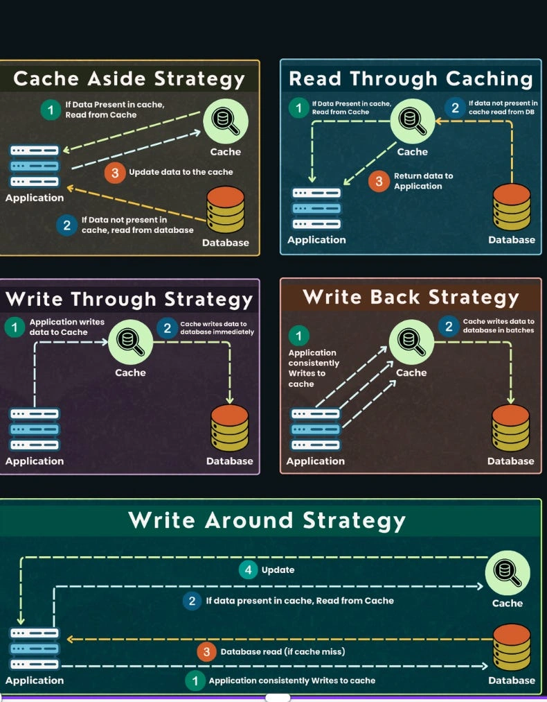
1. Read-Through Cache
The cache acts as a proxy, fetching data from the backend on a miss and storing it automatically.
- How It Works: The application queries the cache; on a miss, the cache fetches, stores, and returns the data.
- Performance Impact: Cache hits take 0.1–1ms, compared to 10–500ms for backend fetches.
- Use Case: Ideal for read-heavy workloads like search results or static data.
- Example: A search engine caches query results (ranked documents, ads) in Redis, reducing latency from 300ms to 1ms. Libraries like Spring Cache automate read-through logic.
- Advanced Use Case: Caching GraphQL query results in a read-through cache, using query hashes as keys, for instant API responses.
- Challenges: Cache miss latency, backend load during misses, and complex cache logic.
2. Write-Through Cache
Every write operation updates both the cache and backend synchronously, ensuring consistency.
- How It Works: Writes are applied to the cache and backend atomically.
- Performance Impact: Cache reads are fast (0.1–0.5ms), but writes are slower due to backend sync.
- Use Case: Critical for consistent data like financial transactions or inventory.
- Example: An e-commerce app writes inventory updates to MySQL and Redis simultaneously, serving cached stock levels in 0.4ms.
- Advanced Use Case: Caching user authentication tokens in Redis with write-through, ensuring immediate availability and consistency.
- Challenges: Write latency, increased backend load, and complexity of atomic operations.
3. Write-Behind Cache (Write-Back)
Writes are stored in the cache first and asynchronously synced to the backend, optimizing write performance.
- How It Works: Data is written to the cache immediately and synced later (e.g., via batch jobs or queues).
- Performance Impact: Writes are fast (0.1–0.5ms), with backend sync delayed (e.g., every 5 seconds).
- Use Case: High-write workloads like user actions, logs, or metrics.
- Example: A social media app caches posts in Redis, serving them in 0.5ms while batching MySQL writes every 5 seconds, reducing write latency by 90%.
- Advanced Use Case: Caching IoT sensor data in a write-behind cache, syncing to a time-series database hourly for analytics.
- Challenges: Risk of data loss on cache failure, eventual consistency, and sync complexity.
4. Cache-Aside (Lazy Loading)
The application explicitly manages caching, fetching and storing data on cache misses.
- How It Works: The app checks the cache; on a miss, it fetches data, stores it in the cache, and returns it.
- Performance Impact: Cache hits take 0.1–1ms, with full control over caching logic.
- Use Case: Complex computations like ML inferences or dynamic data.
- Example: A recommendation engine caches user suggestions in Memcached, reducing inference time from 600ms to 1ms.
- Advanced Use Case: Caching database query results with custom logic to handle partial cache hits (e.g., fallback to stale data).
- Challenges: Application complexity, cache stampede during misses, and manual invalidation.
5. Refresh-Ahead
The cache proactively refreshes data before expiration, ensuring freshness without miss penalties.
- How It Works: The cache fetches updated data in the background based on access patterns or TTLs.
- Performance Impact: Cache hits remain 0.1–0.5ms, with minimal miss spikes.
- Use Case: Semi-static data like weather forecasts or stock prices.
- Example: A weather app caches forecasts in Redis, refreshing them every 10 minutes, ensuring 0.3ms access and fresh data.
- Advanced Use Case: Refreshing cached API responses for real-time sports scores, balancing freshness and performance.
- Challenges: Background refresh overhead, predicting access patterns, and managing refresh frequency.
6. Additional Strategies
- Write-Around: Writes bypass the cache, used for rarely accessed data to avoid cache pollution.
- Cache Population: Pre-fills the cache with hot data during startup to avoid cold cache issues.
- Stale-While-Revalidate: Serves stale data while fetching fresh data in the background, used by CDNs for dynamic content.
Comprehensive Example
A gaming platform employs multiple strategies:
- Read-Through: Caches leaderboards in Redis for 1ms access.
- Write-Through: Updates player stats in Redis and PostgreSQL atomically.
- Write-Behind: Stores chat messages in Redis, syncing to disk every 5 seconds.
- Cache-Aside: Caches game states in Memcached with custom logic.
- Refresh-Ahead: Refreshes match schedules in Redis every minute.
- Result: Every interaction is cached, delivering sub-millisecond performance.
d. Eviction and Invalidation Policies
Caching finite memory requires intelligent eviction and invalidation policies to manage space and ensure data freshness. These policies determine which data is removed and how stale data is handled.
1. LRU (Least Recently Used)
Evicts the least recently accessed items, prioritizing fresh data.
- How It Works: Tracks access timestamps, removing the oldest accessed items.
- Use Case: Dynamic data like user sessions or recent searches.
- Performance Impact: Ensures high hit rates (>90%) for frequently accessed data.
- Example: Redis with LRU evicts inactive user sessions, serving active ones in 0.3ms.
- Advanced Use Case: Caching API tokens with LRU in a microservice, ensuring active tokens remain available.
- Challenges: Memory overhead for tracking access times, potential eviction of valuable data.
2. LFU (Least Frequently Used)
Evicts items accessed least often, prioritizing popular data.
- How It Works: Tracks access frequency, removing low-frequency items.
- Use Case: Skewed access patterns like popular products or trending posts.
- Performance Impact: Optimizes for high-frequency data, achieving 95% hit rates.
- Example: A video platform caches top movies in Memcached with LFU, serving them in 0.4ms.
- Advanced Use Case: Caching trending hashtags in Redis with LFU for social media analytics.
- Challenges: Frequency tracking overhead, risk of evicting new data too soon.
3. FIFO (First-In-First-Out)
Evicts the oldest data, regardless of access patterns.
- How It Works: Removes data in the order it was added.
- Use Case: Sequential data like logs or time-series metrics.
- Performance Impact: Simple but less adaptive, with hit rates of 70–80%.
- Example: A monitoring system caches recent metrics in Redis with FIFO, serving dashboards in 0.5ms.
- Advanced Use Case: Caching event logs for real-time analytics with FIFO, ensuring recent data availability.
- Challenges: Ignores access patterns, leading to lower hit rates.
4. TTL (Time-to-Live)
Evicts data after a fixed duration, ensuring freshness.
- How It Works: Assigns expiration times to cache entries (e.g., 1 second, 1 hour).
- Use Case: Time-sensitive data like stock prices or news feeds.
- Performance Impact: Guarantees freshness with 0.1–0.5ms access times.
- Example: A trading app caches market data with a 1-second TTL, serving it in 0.2ms.
- Advanced Use Case: Randomized TTLs in Redis to avoid mass expirations, ensuring smooth cache performance.
- Challenges: Mass expiration spikes, choosing appropriate TTLs.
5. Explicit Invalidation
Manually or event-driven cache clears triggered by data changes.
- How It Works: Clears specific cache entries using APIs or event systems (e.g., Redis Pub/Sub, Kafka).
- Use Case: Dynamic data like user profiles or CMS content.
- Performance Impact: Ensures freshness with minimal latency overhead.
- Example: A CMS invalidates cached pages in Cloudflare on content updates, serving fresh data in 10ms.
- Advanced Use Case: Using Kafka to broadcast cache invalidation events across a microservices cluster.
- Challenges: Event system complexity, potential for missed invalidations.
6. Versioned Keys
Cache keys include version numbers to serve fresh data without invalidation.
- How It Works: Keys like user:v3:1234 ensure fresh data by updating version numbers.
- Use Case: Frequently updated data like user profiles or configurations.
- Performance Impact: Seamless updates with 0.1–0.5ms access times.
- Example: An API caches user profiles with versioned keys, serving them in 0.3ms.
- Advanced Use Case: Caching configuration settings with versioned keys in a CI/CD pipeline, ensuring instant updates.
- Challenges: Key management complexity, potential for orphaned keys.
7. Additional Policies
- Random Eviction: Evicts random items, used for simple caches with uniform access patterns.
- Size-Based Eviction: Evicts largest items to free space, used for memory-constrained caches.
- Priority-Based Eviction: Assigns priorities to cache items, evicting low-priority ones first.
Tooling and Frameworks ()
Caching tools and frameworks are critical for implementing effective caching strategies across various layers of the stack. These tools range from in-memory stores to distributed data grids and application-level abstractions, each designed to optimize performance, scalability, and ease of integration. Below is an in-depth look at the provided tools, additional frameworks, and their advanced applications.
1. Redis
Redis is an open-source, in-memory data structure store used as a cache, database, and message broker. Its versatility and performance make it a go-to choice for application-level and distributed caching.
- Features:
- In-Memory Storage: Stores data as key-value pairs, lists, sets, hashes, and more, with 0.1–0.5ms access times.
- TTL Support: Time-to-Live (TTL) for automatic expiration of keys, ideal for time-sensitive data like session tokens or news feeds.
- Persistence: Optional disk persistence (RDB snapshots, AOF logs) for durability.
- Clustering: Redis Cluster shards data across nodes for scalability and high availability.
- Pub/Sub: Supports event-driven cache invalidation via publish/subscribe channels.
- Advanced Data Structures: Bitmaps, HyperLogLog, and geospatial indexes for specialized use cases.
- Use Case: An e-commerce platform caches product details in Redis, serving them in 0.3ms vs. 50ms for a PostgreSQL query. Pub/Sub invalidates cache entries on inventory updates.
2. Memcached
Memcached is a lightweight, distributed memory object caching system optimized for simplicity and speed.
- Features:
- High Performance: Key-value store with sub-millisecond access times (0.1–0.4ms).
- Distributed Architecture: Scales horizontally by sharding keys across nodes.
- No Persistence: Purely in-memory, prioritizing speed over durability.
- Multi-Threaded: Handles high concurrency efficiently.
- Use Case: A news website caches article metadata in Memcached, reducing database queries by 90% and serving data in 0.4ms.
- Advanced Use Case: Caching pre-rendered HTML fragments for a CMS, with LFU eviction to prioritize popular articles.
- Example: Twitter uses Memcached to cache tweet metadata, handling millions of requests per second with <1ms latency.
- Tools Integration: Memcached clients like libmemcached or pylibmc, and monitoring via Prometheus exporters.
- Challenges: No built-in persistence, limited data structures (key-value only), and manual invalidation.
3. Caffeine (Java)
Caffeine is a high-performance, in-memory local caching library for Java, designed as a modern replacement for Guava Cache.
- Features:
- TTL and Size-Based Eviction: Supports time-based and maximum-size eviction policies.
- Refresh-Ahead: Automatically refreshes cache entries based on access patterns.
- Asynchronous Loading: Non-blocking cache population for low-latency applications.
- High Throughput: Optimized for low-latency access (0.01–0.1ms) in single-process environments.
- Statistics: Tracks hit/miss rates and eviction counts for monitoring.
- Use Case: A Java-based web server caches configuration settings in Caffeine, serving them in 0.01ms vs. 1ms for Redis.
4. Hazelcast
Hazelcast is an open-source, distributed in-memory data grid that combines caching, querying, and compute capabilities.
- Features:
- Distributed Caching: Shards and replicates data across a cluster for scalability and fault tolerance.
- Querying: SQL-like queries on cached data using predicates.
- In-Memory Computing: Executes distributed tasks (e.g., MapReduce) on cached data.
- High Availability: Automatic failover and replication.
- Near Cache: Local caching on client nodes for ultra-low latency (0.01–0.1ms).
- Use Case: A financial app caches market data in Hazelcast, enabling 0.5ms access across microservices.
5. Apache Ignite
Apache Ignite is a distributed in-memory data grid and caching platform with advanced querying and compute features.
- Features:
- Distributed Caching: Key-value and SQL-based caching across nodes.
- ACID Transactions: Supports transactional consistency for cached data.
- SQL Queries: ANSI SQL support for querying cached data.
- Compute Grid: Executes distributed computations on cached data.
- Persistence: Optional disk persistence for durability.
- Use Case: A banking app caches transaction metadata in Ignite, enabling 0.5ms access with ACID guarantees.
6. Spring Cache
Spring Cache is a Java framework abstraction for application-level caching, supporting pluggable backends like Redis, Memcached, or Caffeine.
- Features:
- Declarative Caching: Annotations like @Cacheable, @CachePut, and @CacheEvict simplify caching logic.
- Pluggable Backends: Integrates with Redis, Ehcache, Caffeine, and others.
- Cache Abstraction: Provides a consistent API across caching providers.
- Conditional Caching: Supports custom cache keys and conditions.
- Use Case: A Spring Boot app caches REST API responses in Redis via @Cacheable, reducing latency from 50ms to 0.3ms.
7. Django Cache
Django Cache is a Python framework abstraction for caching in Django applications, supporting multiple backends.
- Features:
- Flexible Backends: Supports Redis, Memcached, database caching, and in-memory caching.
- Per-Site Caching: Caches entire pages or views.
- Per-View Caching: Caches specific view outputs with decorators like @cache_page.
- Low-Level API: Fine-grained control for caching arbitrary data.
- Use Case: A Django-based blog caches rendered pages in Memcached, serving them in 0.4ms vs. 20ms for database rendering.
Metrics to Monitor
Monitoring caching performance is critical to ensure high hit rates, low latency, and efficient resource usage. Below is an expanded list of metrics to track, along with monitoring techniques, tools, and examples to optimize cache performance.
1. Cache Hit Rate / Miss Rate
- Definition: The percentage of requests served from the cache (hit rate) vs. those requiring backend fetches (miss rate).
- Importance: High hit rates (>90%) indicate effective caching; high miss rates signal poor cache utilization or invalidation issues.
- Monitoring:
- Use tools like Redis INFO, Memcached stats, or Caffeine’s statistics API to track hits and misses.
- Visualize with Prometheus and Grafana dashboards for real-time insights.
- Set alerts for hit rates dropping below 80%.
- Example: A Redis cache for product details achieves a 95% hit rate, serving 95% of requests in 0.3ms. A sudden drop to 70% triggers an alert, revealing a misconfigured TTL.
- Tools: Prometheus, Grafana, RedisInsight, AWS CloudWatch.
2. Eviction Count
- Definition: The number of items removed from the cache due to memory constraints or eviction policies (e.g., LRU, LFU).
- Importance: High eviction counts indicate insufficient cache size or poor eviction policy tuning.
- Monitoring:
- Track evictions via Redis evicted_keys or Memcached evictions stats.
- Use time-series databases like Prometheus to analyze eviction trends.
- Set thresholds for excessive evictions (e.g., >1000/hour).
- Example: A Memcached instance evicts 500 keys per minute due to a small cache size, prompting a resize to 16GB to maintain hit rates.
- Tools: Prometheus, Grafana, Hazelcast Management Center.
3. Latency of Reads/Writes
- Definition: The time taken for cache read (hit/miss) and write operations.
- Importance: Ensures cache operations meet performance goals (e.g., <1ms for reads, <2ms for writes).
- Monitoring:
- Measure latency percentiles (P50, P95, P99) using tools like Micrometer or AWS CloudWatch.
- Log slow operations (>10ms) for investigation.
- Compare cache latency to backend latency to quantify savings.
- Example: Redis read latency averages 0.3ms, but P99 spikes to 5ms during high traffic, indicating contention or network issues.
- Tools: Prometheus, Grafana, Micrometer, New Relic.
4. Memory Usage
- Definition: The amount of memory consumed by the cache, including total and per-key usage.
- Importance: Prevents memory exhaustion and ensures cost efficiency.
- Monitoring:
- Track memory usage via Redis used_memory or Memcached bytes stats.
- Monitor memory fragmentation (e.g., Redis mem_fragmentation_ratio).
- Set alerts for memory usage exceeding 80% of capacity.
- Example: A Redis instance reaches 90% memory usage, triggering an alert to scale up or optimize key sizes.
- Tools: RedisInsight, AWS CloudWatch, Prometheus.
5. Key Distribution and Skew
- Definition: The distribution of keys across cache nodes and access frequency skew.
- Importance: Identifies hot keys or uneven sharding that degrade performance.
- Monitoring:
- Use Redis Cluster’s key distribution stats or Hazelcast’s partition metrics.
- Track hot keys with high access rates using Redis MONITOR or custom logging.
- Visualize skew with heatmaps in Grafana.
- Example: A Redis Cluster shows 80% of requests hitting one node due to a hot key (e.g., trending product), prompting key re-sharding.
- Tools: RedisInsight, Hazelcast Management Center, Grafana.
6. TTL Effectiveness and Stale Reads
- Definition: Measures how well TTLs balance freshness and hit rates, and the frequency of stale data served.
- Importance: Ensures data freshness without sacrificing performance.
- Monitoring:
- Track expired keys via Redis expired_keys or custom TTL tracking.
- Log stale reads by comparing cache vs. backend data versions.
- Set alerts for high stale read rates (>1%).
- Example: A news app with a 1-minute TTL for articles sees 5% stale reads, prompting a refresh-ahead strategy to reduce staleness.
- Tools: Prometheus, Grafana, custom logging with ELK Stack.
Monitoring Tools
- Prometheus: Time-series monitoring for cache metrics, with exporters for Redis, Memcached, and Hazelcast.
- Grafana: Visualizes cache performance with dashboards for hit rates, latency, and memory.
- RedisInsight: GUI for monitoring Redis metrics, key patterns, and performance.
- AWS CloudWatch: Monitors ElastiCache and other cloud-based caches.
- New Relic / Datadog: Application performance monitoring with cache-specific plugins.
- ELK Stack: Logs cache errors and stale reads for root-cause analysis.
- Micrometer: Integrates with Spring Cache and Caffeine for application-level metrics.
Conclusion
Caching is a multi-faceted technique that spans every layer of the stack—browser, CDN, edge, application, database, distributed, and local caches—each optimized for specific data and access patterns. By employing strategies like read-through, write-through, write-behind, cache-aside, and refresh-ahead, systems can cache every computation and data fetch, achieving sub-millisecond performance. Eviction and invalidation policies like LRU, LFU, FIFO, TTL, explicit invalidation, and versioned keys ensure efficient memory use and data freshness. Real-world applications, such as streaming platforms and e-commerce sites, leverage these techniques to handle millions of requests with minimal latency and cost, demonstrating the power of a well-designed caching architecture.
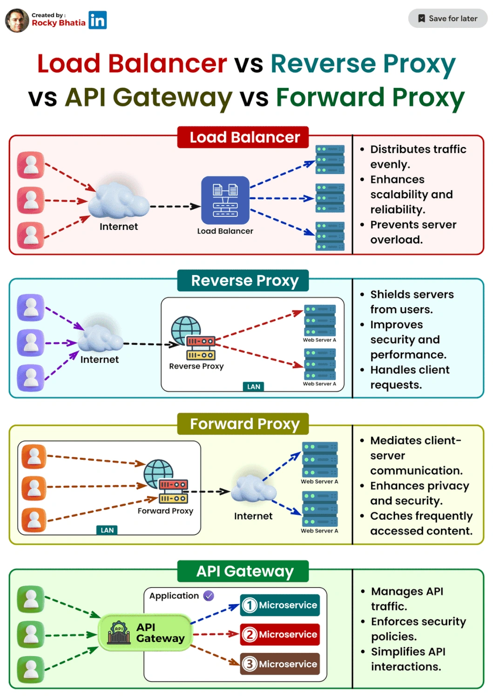
Welcome to the 229 new who have joined us since last edition!
If you aren’t subscribed yet, join smart, curious folks by subscribing below.
Thanks for reading Rocky’s Newsletter ! Subscribe for free to receive new posts and support my work.
Thanks for reading Rocky’s Newsletter ! Subscribe for free to receive new posts and support my work.
In the intricate architecture of network communications, the roles of Load Balancers, Reverse Proxies, Forward Proxies, and API Gateways are pivotal. Each serves a distinct purpose in ensuring efficient, secure, and scalable interactions within digital ecosystems. As organisations strive to optimise their network infrastructure, it becomes imperative to understand the nuanced functionalities of these components. In this comprehensive exploration, we will dissect Load Balancers, Reverse Proxies, Forward Proxies, and API Gateways, shedding light on how they work, their specific use cases, and the unique contributions they make to the world of network technology.
Load Balancer:
Overview: A Load Balancer acts as a traffic cop, distributing incoming network requests across multiple servers to ensure no single server is overwhelmed. This not only optimises resource utilisation but also enhances the scalability and reliability of web applications.
How it Works:
A load balancer acts as a traffic cop, directing incoming requests to different servers based on various factors. These factors include:
- Server load: Directing traffic to less busy servers.
- Server health: Ensuring requests are sent to healthy servers.
- Round-robin: Distributing traffic evenly among servers.
- Least connections: Sending requests to the server with the fewest active connections.
Once a request is sent to a server, the server processes the request and sends a response back to the load balancer, which then forwards it to the client.
Benefits of Load Balancing
- Improved performance: By distributing traffic across multiple servers, load balancers can significantly improve website or application speed.
- Increased availability: If one server fails, the load balancer can redirect traffic to other available servers, minimising downtime.
- Enhanced scalability: Load balancers can handle increasing traffic by adding more servers to the pool.
- Optimised resource utilisation: By evenly distributing traffic, load balancers prevent server overload and maximise resource efficiency.
Types of Load Balancers
There are two main types of load balancers:
- Hardware load balancers: Dedicated devices with high performance and reliability.
- Software load balancers: Software applications that can run on servers, virtual machines, or in the cloud.
Real-world Applications
Load balancers are used in a wide range of applications, including:
- E-commerce websites: Handling high traffic during sales or promotions.
- Online gaming platforms: Ensuring smooth gameplay for multiple players.
- Cloud computing environments: Distributing workloads across virtual machines.
- Content delivery networks (CDNs): Optimising content delivery to users worldwide.
Reverse Proxy:
Overview: A Reverse Proxy serves as an intermediary between client devices and web servers. It receives requests from clients on behalf of the servers, acting as a gateway to handle tasks such as load balancing, SSL termination, and caching.
How it Works: How Does it Work?
When a client requests a resource, the request is directed to the reverse proxy. The proxy then fetches the requested content from the origin server and delivers it to the client. This process provides several benefits:
- Load balancing: Distributes incoming traffic across multiple origin servers.
- Caching: Stores frequently accessed content locally, reducing response times.
- Security: Protects origin servers by acting as a shield against attacks.
- SSL termination: Handles SSL/TLS encryption and decryption, offloading the process from origin servers.
Benefits of a Reverse Proxy
- Improved performance: Caching and load balancing enhance website speed.
- Enhanced security: Protects origin servers from attacks like DDoS and SQL injection.
- Scalability: Handles increased traffic without impacting origin servers.
- Flexibility: Allows for A/B testing and geo-location routing.
Common Use Cases
- Content Delivery Networks (CDNs): Distributes content across multiple locations for faster delivery.
- Web application firewalls (WAFs): Protects web applications from attacks.
- Load balancing: Distributes traffic across multiple servers.
- API gateways: Manages API traffic and security.
Forward Proxy:
Overview: A Forward Proxy, also known simply as a proxy, acts as an intermediary between client devices and the internet. It facilitates requests from clients to external servers, providing functionalities such as content filtering, access control, and anonymity.
How Does it Work?
When a client wants to access a resource on the internet, it sends a request to the forward proxy. The proxy then fetches the requested content from the origin server and delivers it to the client. This process involves several steps:
- Client connects to the proxy server.
- Client sends a request to the proxy.
- Proxy forwards the request to the origin server.
- Origin server sends the response to the proxy.
- Proxy forwards the response to the client.
Benefits of a Forward Proxy
- Caching: Stores frequently accessed content locally, reducing response times.
- Security: Protects clients by filtering malicious content and hiding their IP addresses.
- Access control: Restricts internet access based on user or group policies.
- Anonymity: Allows users to browse the internet without revealing their identity.
Common Use Cases
- Content filtering: Blocks access to inappropriate or harmful websites.
- Parental control: Restricts online activities for children.
- Corporate network security: Protects internal networks from external threats.
- Anonymity: Enables users to browse the internet privately.
API Gateway:
Overview: An API Gateway is a server that acts as an API front-end, receiving API requests, enforcing throttling and security policies, passing requests to the back-end service, and then passing the response back to the requester. It serves as a central point for managing, monitoring, and securing APIs.
How Does it Work?
- Request Reception: The API Gateway receives API requests from clients.
- Request Processing: It processes the request, applying policies like authentication, authorisation, rate limiting, and caching.
- Routing: The gateway forwards the request to the appropriate backend service based on defined rules.
- Response Aggregation: It aggregates responses from multiple services, if necessary, and returns a unified response to the client.
Benefits of an API Gateway
- Improved performance: Caching, load balancing, and request aggregation can enhance performance.
- Enhanced security: Provides a centralised point for enforcing security policies.
- Simplified development: Isolates clients from backend complexities.
- Monetisation and analytics: Enables tracking API usage and generating revenue.
Common Use Cases
- Microservices architectures: Manages communication between multiple microservices.
- Mobile app development: Provides a unified interface for mobile apps to access backend services.
- API management: Enforces API policies, monitors usage, and generates analytics.
- IoT applications: Handles a large number of devices and data streams.
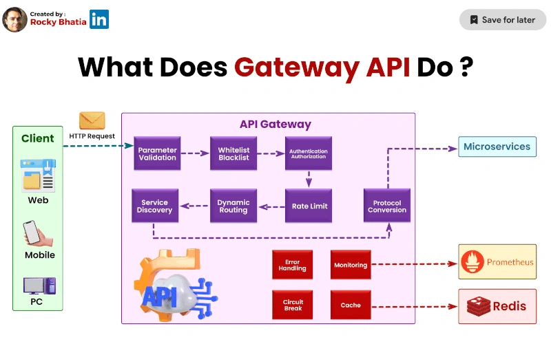
Key Features of an API Gateway
- Authentication and authorisation: Verifies user identity and permissions.
- Rate limiting: Prevents API abuse through throttling.
- Caching: Improves performance by storing frequently accessed data.
- Load balancing: Distributes traffic across multiple backend services.
- API versioning: Manages different API versions.
- Fault tolerance: Handles failures gracefully.
- Monitoring and analytics: Tracks API usage and performance.
Conclusion:
In the intricate web of network components, Load Balancers, Reverse Proxies, Forward Proxies, and API Gateways play distinct yet interconnected roles. Load Balancers ensure even distribution of traffic to optimise server performance, while Reverse Proxies act as intermediaries for clients and servers, enhancing security and performance.
Forward Proxies, on the other hand, serve as gatekeepers between client devices and the internet, enabling content filtering and providing anonymity. Lastly, API Gateways streamline the management, security, and accessibility of APIs, serving as centralised hubs for diverse services.
Understanding the unique functionalities of these components is essential for organisations seeking to build robust, secure, and scalable network infrastructures. As technology continues to advance, the synergy of Load Balancers, Reverse Proxies, Forward Proxies, and API Gateways will remain pivotal in shaping the future of network architecture.
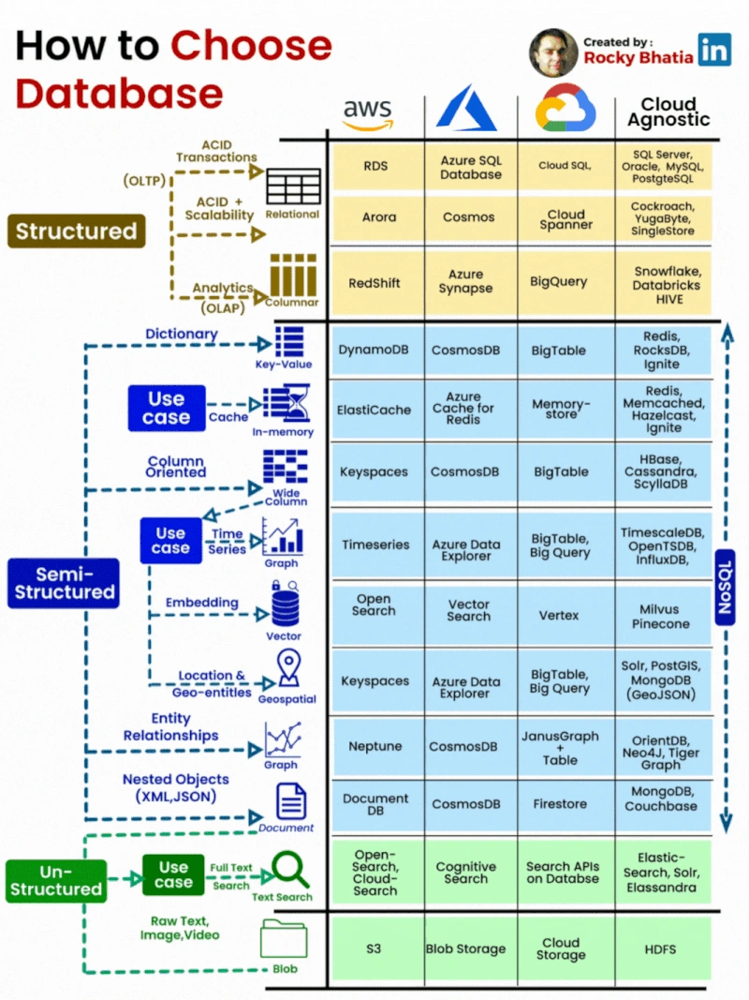
Welcome to the 149 new who have joined us since last edition!
If you aren’t subscribed yet, join smart, curious folks by subscribing below.
Thanks for reading Rocky’s Newsletter ! Subscribe for free to receive new posts and support my work.
Thanks for reading Rocky’s Newsletter ! Subscribe for free to receive new posts and support my work.
Introduction
Choosing the right database is a critical decision that can significantly impact the performance, scalability, and maintainability of your application. With a plethora of options available, ranging from traditional SQL databases to modern NoSQL solutions, making the right choice requires a deep understanding of your application's needs, the nature of your data, and the specific use cases you are targeting. This article aims to guide you through the different types of databases, their typical use cases, and the factors to consider when selecting the best one for your project.
Selecting the right database is more than just a technical decision; it's a strategic choice that affects how efficiently your application runs, how easily it scales, and how well it meets user expectations. Whether you’re building a small web app or a large enterprise system, the database you choose will influence data management, user experience, and operational costs.
SQL Databases
Use Cases
SQL (Structured Query Language) databases are the traditional backbone of many applications, particularly where data is structured, relationships are welldefined, and consistency is paramount. These databases are known for their strong ACID (Atomicity, Consistency, Isolation, Durability) properties, which ensure data integrity and reliable transactions.
Examples
MySQL: An open source relational database widely used for web applications.
PostgreSQL: Known for its extensibility and support for advanced data types and complex queries.
Microsoft SQL Server: A comprehensive enterprise level database solution with robust features.
Oracle: A scalable and secure platform suitable for mission critical applications.
SQLite: A lightweight, server-less database of ten used in embedded systems or small scale applications.
When to Use SQL Databases
Opt for SQL databases when your application requires a stable and well defined schema, strict consistency, and the ability to handle complex transactions. These databases are ideal for financial systems, ecommerce platforms, and any application where data relationships and integrity are crucial.
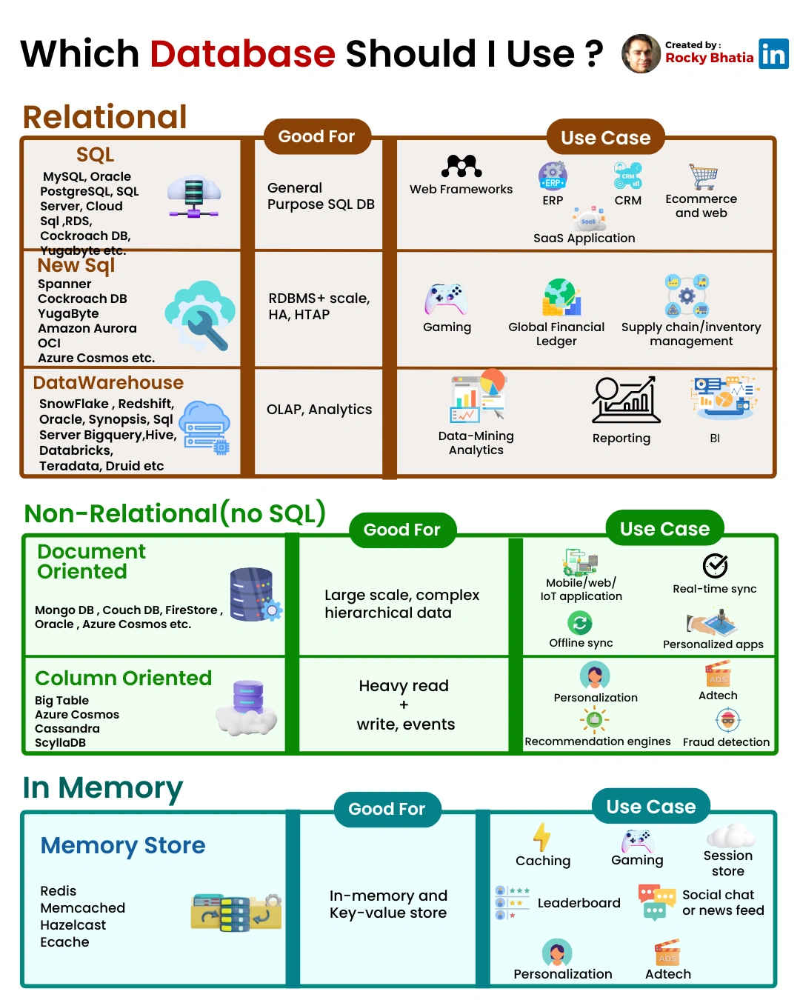
NewSQL Databases
Use Cases
NewSQL databases aim to blend the scalability of NoSQL with the strong consistency guarantees of traditional SQL databases. They are designed to handle largescale applications with distributed architectures, providing the benefits of SQL while enabling horizontal scalability.
Examples
CockroachDB: A distributed SQL database known for its strong consistency and global distribution capabilities.
Google Spanner: A globally distributed database that offers strong consistency and horizontal scalability.
When to Use NewSQL Databases
Choose NewSQL databases for applications that require both the consistency of SQL and the scalability of NoSQL. These databases are particularly suited for large scale applications that demand high availability and reliable distributed transactions.
Data Warehouses
Use Cases
Data warehouses are specialised for storing and analysing large volumes of data. They are optimised for business intelligence (BI), data analytics, and reporting, making them the goto solution for organizations looking to extract insights from massive datasets.
Examples
Amazon Redshift: A fully managed data warehouse with high performance query capabilities.
Google BigQuery: A server-less, highly scalable data warehouse for realtime analytics.
Snowflake: A cloud based data warehouse known for its flexibility, scalability, and ease of use.
Teradata: Renowned for its scalability and parallel processing capabilities.
When to Use Data Warehouses
Data warehouses are ideal when your focus is on data analytics, reporting, and decision making processes. If your application involves processing large datasets and requires complex queries and aggregations, a data warehouse is the right choice.
NoSQL Databases
Document Databases
Document databases, such as MongoDB, store data in flexible, JSON like documents. They are ideal for applications where the data model is dynamic and unstructured, offering adaptability to changing requirements.
Wide Column Stores
Wide column stores, like Cassandra, are designed for high throughput scenarios, particularly in distributed environments. They excel in handling large volumes of data across many servers, making them suitable for applications requiring fast read/write operations.
In Memory Databases
In-memory databases, such as Redis, store data in the system's memory rather than on disk. This results in extremely low latency and high throughput, making them perfect for realtime applications like caching, gaming, or financial trading systems.
When to Use NoSQL Databases
Document Databases: When your application needs flexibility in data modeling and the ability to store nested, complex data structures.
Wide Column Stores: For applications with high write/read throughput requirements, especially in decentralised environments.
InMemory Databases: When rapid data access and low latency responses are critical, such as in realtime analytics or caching.
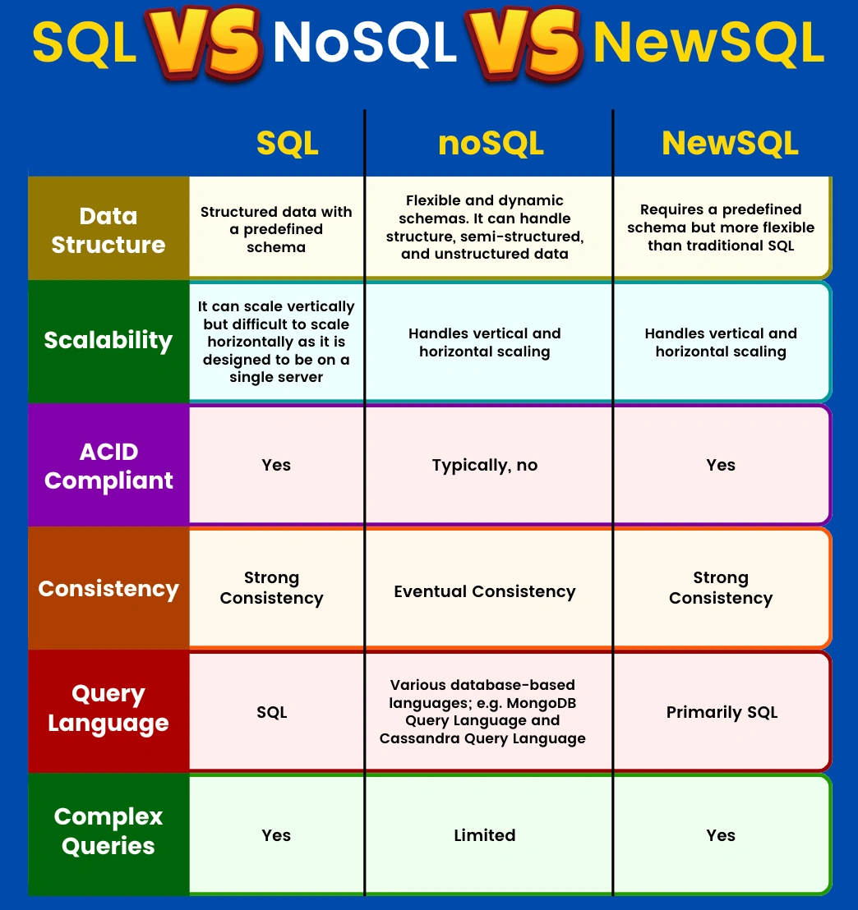
BTREE VS LSM
- Choose B-Tree if your application demands fast point lookups and low-latency reads, with fewer writes.
- Opt for LSM Tree if you need high write throughput with occasional reads, such as in time-series databases or log aggregation systems.
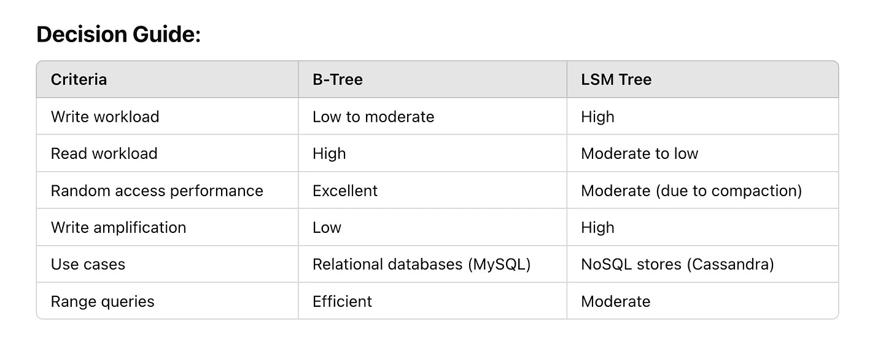
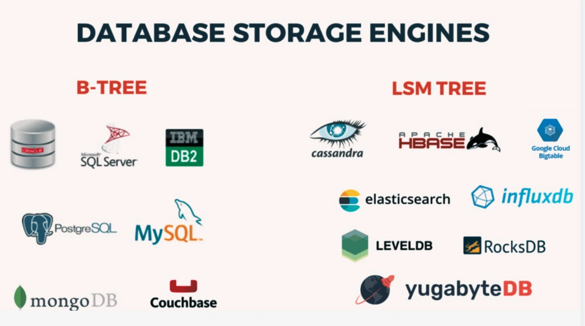
Other Key Considerations in Database Selection
Development Speed
Consider how quickly your team can develop and maintain the database. SQL databases offer predictability with well defined schemas, whereas NoSQL databases provide flexibility but may require more effort in schema design.
Ease of Maintenance
Evaluate the ease of database management, including backups, scaling, and general maintenance tasks. SQL databases often come with mature tools for administration, while NoSQL databases may offer simpler scaling options.
Team Expertise
Assess the skill set of your development team. If your team is more familiar with SQL databases, it might be advantageous to stick with them. Conversely, if your team has experience with NoSQL databases, leveraging that expertise could lead to faster development and deployment.
Hybrid Approaches
Sometimes, the best solution is a hybrid approach, using different databases for different components of your application. This polyglot persistence strategy allows you to leverage the strengths of multiple database technologies.
Scalability and Performance
Scalability is a crucial factor. SQL databases typically scale vertically, while NoSQL databases are designed for horizontal scaling. Performance should be tested and benchmarked based on your specific use case to ensure optimal results.
Security and Compliance
Security and compliance are nonnegotiable in many industries. Evaluate the security features and compliance certifications of the databases you are considering. Some databases are better suited for highly regulated industries due to their robust security frameworks.
Community and Support
A strong and active community can be a lifeline when you encounter challenges. Consider the size and activity level of the community surrounding the database, as well as the availability of commercial support options.
Cost Considerations
Cost is always a factor. Evaluate the total cost of ownership, including licensing fees, hosting costs, and ongoing maintenance expenses. Cloudbased databases often provide flexible pricing models based on actual usage, which can be more costeffective for scaling applications.
Conclusion
Choosing the right database is not a one size fits all decision. It requires careful consideration of your application's specific needs, the nature of your data, and the expertise of your team. Whether you opt for SQL, NewSQL, NoSQL, or a hybrid approach, the key is to align your choice with your longterm goals and be prepared to adapt as your application evolves. Remember, the database landscape is continuously evolving, and staying informed about the latest developments will help you make the best decision for your project.
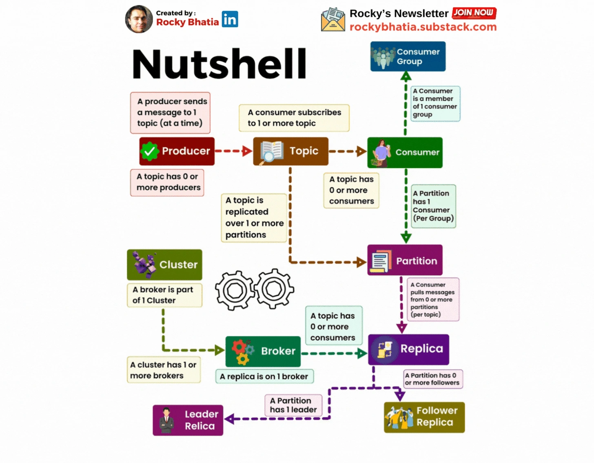
Refer just few people & Get a chance to connect 1:1 with me for career guidance
Welcome to the Kafka Crash Course! Whether you're a beginner or a seasoned engineer, this guide will help you understand Kafka from its basic concepts to its architecture, internals, and real-world applications.
Give yourself only 10 mins and then you will comfortable in Kafka
Let’s dive in!
✨1 The Basics
What is Kafka?
Apache Kafka is an open-source distributed event streaming platform capable of handling trillions of events per day. Originally developed by LinkedIn, Kafka has become the backbone of real-time data streaming applications. It’s not just a messaging system; it’s a platform for building real-time data pipelines and streaming apps, Kafka is also very popular in microservice world for any async communication
Key Terminology:
- Topics: Think of topics as categories or feeds to which data records are published. In Kafka, topics are the primary means for organizing and managing data.
- Producers: Producers are responsible for sending data to Kafka topics. They write data to Kafka in a continuous flow, making it available for consumption.
- Consumers: Consumers read and process data from Kafka topics. They can consume data individually or as part of a group, allowing for distributed data processing.
- Brokers: Kafka runs on a cluster of servers called brokers. Each broker is responsible for managing the storage and retrieval of data within the Kafka ecosystem.
- Partitions: To manage large volumes of data, topics are split into partitions. Each partition can be thought of as a log where records are stored in a sequence. This division enables Kafka to scale horizontally.
- Replicas: Backups of partitions to prevent data loss
Kafka operates on a publish-subscribe messaging model, where producers publish records to topics, and consumers subscribe to those topics to receive records.
Push/Pull: Producers push data, consumers pull at their own pace.
This decoupled architecture allows for flexible, scalable, and fault-tolerant data handling.
A Cluster has one or more brokers
- A Kafka cluster is a distributed system composed of multiple machines (brokers). These brokers work together to store, replicate, and distribute messages.
A producer sends messages to a topic
- A topic is a logical grouping of related messages. Producers send messages to specific topics. For example, a "user-activity" topic could store information about user actions on a website.
A Consumer Subscribes to a topic
- Consumers subscribe to topics to receive messages. They can subscribe to one or more topics.
A Partition has one or more replicas
- A replica is a copy of a partition stored on a different broker. This redundancy ensures data durability and availability.
Each Record consists of a KEY, a VALUE and a TIMESTAMP
- A record is the basic unit of data in Kafka. It consists of a key, a value, and a timestamp. The key is used for partitioning and ordering messages, while the value contains the actual data. The timestamp is used for ordering and retention policies.
A Broker has zero or one replica per partition
- Each broker stores at most one replica of a partition. This ensures that the data is distributed evenly across the cluster.
A topic is replicated to one or more partitions
- To improve fault tolerance and performance, Kafka partitions a topic into smaller segments called partitions. Each partition is replicated across multiple brokers. This ensures that data is not lost if a broker fail
A consumer is a member of a CONSUMER GROUP
- Consumers are grouped into consumer groups. This allows multiple consumers to share the workload of processing messages from a topic. Each consumer group can only have one consumer per partition.
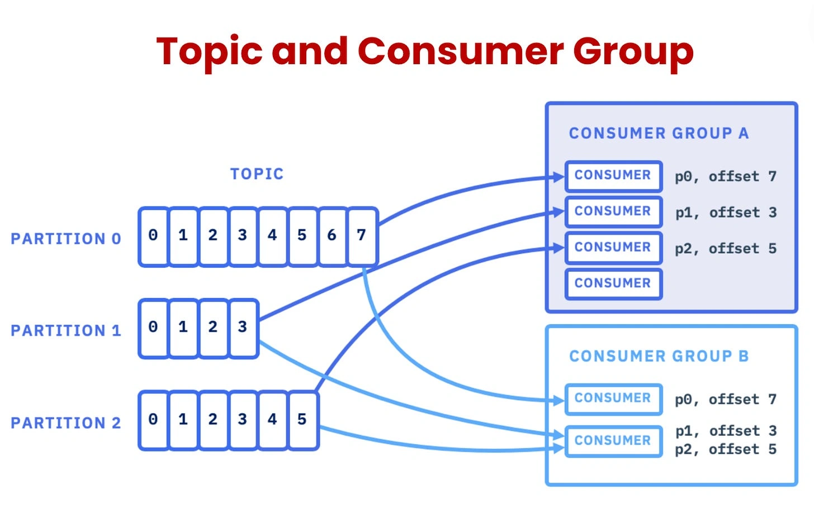
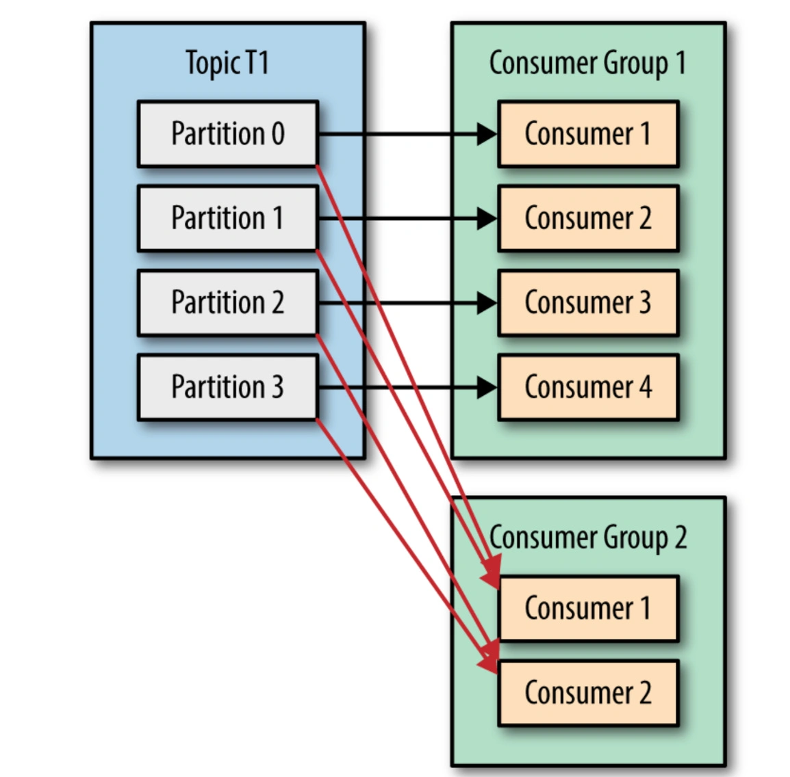
A Partition has one consumer per group
- To ensure that each message is processed only once, Kafka assigns only one consumer from a consumer group to each partition.
An OFFSET is the number assigned to a record in a partition
- The offset is a unique identifier for a record within a partition. Consumers use offsets to keep track of their progress and avoid processing the same message multiple times.
A Kafka Cluster maintains a PARTITIONED LOG
- Kafka stores messages in a partitioned log. This log is distributed across the brokers in the cluster and is highly durable and scalable
2. 🛠️ Kafka Architecture
Kafka Producer
Producers: Producers are responsible for sending data to Kafka topics. They write data to Kafka in a continuous flow, making it available for consumption.
Producer Workflow:
- Create Producer Instance: The producer client is initialized, providing necessary configuration parameters like bootstrap servers, topic name, and serialization format.
- Produce Message: The producer creates a message object, setting the key and value.
- Send Message: The producer sends the message to the Kafka cluster, specifying the topic and optionally the partition.
- Handle Acknowledgements: The producer can configure the level of acknowledgement required from the broker nodes. This can range from none to all replicas, affecting reliability and performance.
Consumers: Consumers read and process data from Kafka topics. They can consume data individually or as part of a group, allowing for distributed data processing.
Consumer Workflow:
- Create Consumer Instance: The consumer client is initialized, providing necessary configuration parameters like bootstrap servers, group ID, topic subscriptions, and offset management strategy.
- Subscribe to Topics: The consumer subscribes to the desired topics.
- Consume Messages: The consumer receives messages from the Kafka cluster, processing them as they arrive.
- Commit Offsets: The consumer commits the offsets of the messages it has processed to ensure that it doesn't consume the same messages again in case of restarts or failures.
Kafka Clusters:
At the heart of Kafka is its cluster architecture. A Kafka cluster consists of multiple brokers, each of which manages one or more partitions of a topic. This distributed nature allows Kafka to achieve high availability and scalability. When data is produced, it is distributed across these brokers, ensuring that no single point of failure exists.
Topic Partitioning:
Partitioning is Kafka's secret sauce for scalability and high throughput. By splitting a topic into multiple partitions, Kafka allows for parallel processing of data. Each partition can be stored on a different broker, and consumers can read from multiple partitions simultaneously, significantly increasing the speed and efficiency of data processing.
Replication and Fault Tolerance:
To ensure data reliability, Kafka implements replication. Each partition is replicated across multiple brokers, and one of these replicas acts as the leader. The leader handles all reads and writes for that partition, while the followers replicate the data. If the leader fails, a follower automatically takes over, ensuring uninterrupted service.
Zookeeper’s Role:
Zookeeper is an integral part of Kafka’s architecture. It keeps track of the Kafka brokers, topics, partitions, and their states. Zookeeper also helps in leader election for partitions and manages configuration settings. Though Kafka has been moving towards replacing Zookeeper with its own internal quorum-based system, Zookeeper remains a key component in many Kafka deployments today.
3. Kafka Internals: Peeking Under the Hood
Log-based Storage:
Kafka’s data storage model is log-based, meaning it stores records in a continuous sequence in a log file. Each partition in Kafka corresponds to a single log, and records are appended to the end of this log. This design allows Kafka to provide high throughput with minimal latency. Kafka’s use of a write-ahead log ensures that data is reliably stored before being made available to consumers.
Kafka Delivery Semantic
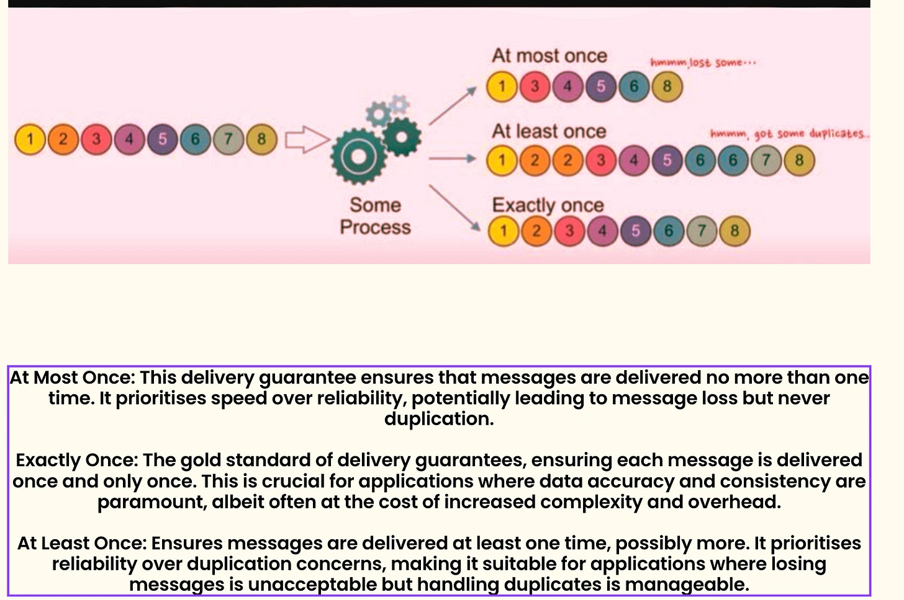
Offset Management:
Offsets are an essential part
of Kafka’s operation. Each record in a partition is assigned a
unique offset, which acts as an identifier for that record.
Consumers use offsets to keep track of which records have been
processed. Kafka allows consumers to commit offsets, enabling them
to resume processing from the last committed offset in case of a
failure.
Retention Policies:
Kafka provides flexible
retention policies that dictate how long data is kept in a topic
before being deleted or compacted. By default, Kafka retains data
for a set period, after which it is automatically purged. However,
Kafka also supports log compaction, where older records with the
same key are compacted to keep only the latest version, saving space
while preserving important data.
Compaction:
Log compaction is a Kafka feature
that ensures that the latest state of a record is retained while
older versions are deleted. This is particularly useful for use
cases where only the most recent data is relevant, such as in
maintaining the current state of a key-value store. Compaction
happens asynchronously, allowing Kafka to handle high write loads
while maintaining data efficiency.
4. Real-World Applications of Kafka
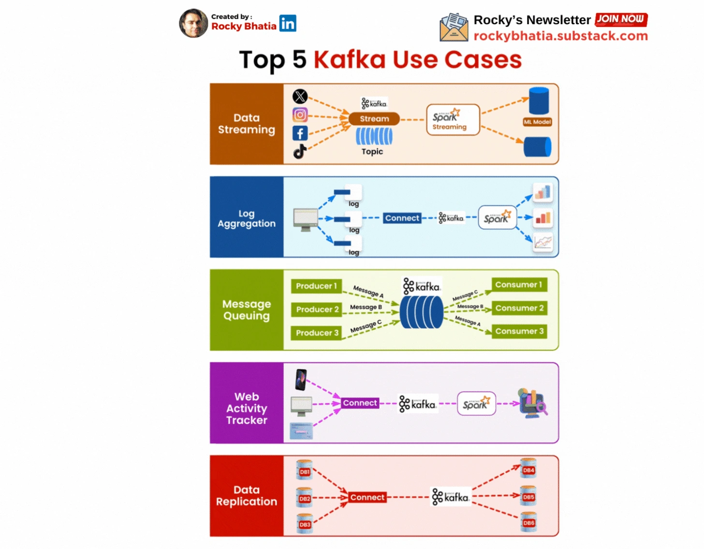
Real-Time Analytics:
One of Kafka’s most common
use cases is in real-time analytics. Companies use Kafka to collect
and analyse data as it’s generated, enabling them to react to events
as they happen. For example, Kafka can be used to monitor server
logs in real time, allowing teams to detect and respond to issues
before they escalate.
Event Sourcing:
Kafka is also a powerful tool for
event sourcing, a pattern where changes to the state of an
application are logged as a series of events. This approach is
beneficial for building applications that require a reliable audit
trail. By using Kafka as an event store, developers can replay
events to reconstruct the state of an application at any point in
time.
Microservices Communication:
Kafka’s ability to
handle high-throughput, low-latency communication makes it ideal for
micro services architectures. Instead of services communicating
directly with each other, they can publish and consume events
through Kafka. This decoupling reduces dependencies and makes the
system more resilient to failures.
Data Integration:
Kafka serves as a central hub
for data integration, enabling seamless movement of data between
different systems. Whether you’re ingesting data from databases,
sensors, or other sources, Kafka can stream that data to data
warehouses, machine learning models, or real-time dashboards. This
capability is invaluable for building data-driven applications that
require consistent and reliable data flow.
5. Kafka Connect
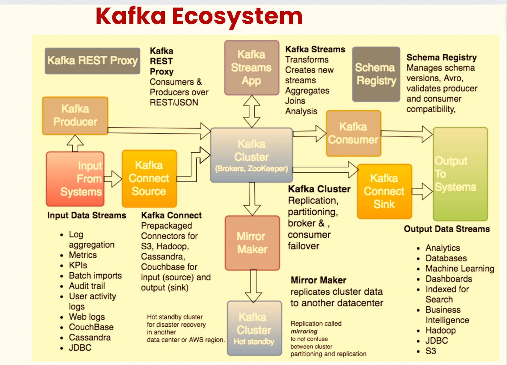
- Data Integration Framework: Kafka Connect is a tool for streaming data between Kafka and external systems like databases, message queues, or file systems.
- Source and Sink Connectors: It provides Source Connectors to pull data from systems into Kafka and Sink Connectors to push data from Kafka to external systems.
- Scalability and Distributed: Kafka Connect is distributed and can be scaled across multiple workers, providing fault tolerance and high availability.
- Schema Management: Kafka Connect supports schema management with Confluent Schema Registry, ensuring consistency in data formats across different systems.
- Configuration Driven: Kafka Connect allows easy configuration of connectors through JSON or properties files, requiring minimal coding effort.
- Single or Distributed Mode: Kafka Connect can run in standalone mode for small setups or distributed mode for larger, more complex environments.
Conclusion
By now, you should have a solid understanding of Kafka, from the basics to the intricacies of its architecture and internals. Kafka is a versatile tool that can be applied to various real-world scenarios, from real-time analytics to event-driven architectures. Whether you’re planning to integrate Kafka into your existing systems or build something entirely new, this crash course equips you with the knowledge to harness Kafka’s full potential.
Welcome to the 143 new who have joined us since last edition!
If you aren’t subscribed yet, join smart, curious folks by subscribing below.
Thanks for reading Rocky’s Newsletter ! Subscribe for free to receive new posts and support my work
Refer just few people & Get a chance to connect 1:1 with me for career guidance
Welcome to the Microservice Crash Course! Whether you're a beginner or a seasoned engineer, this guide will help you understand Micro services from its basic concepts to its architecture, Best practices, and real-world applications.
Introduction to Microservices
Ever wonder how tech giants like Netflix and Amazon manage to run their massive platforms so smoothly? The secret is micro services! This allows them to scale quickly, make changes without disrupting the entire platform, and deliver seamless experiences to millions of users. Micro services are the architecture behind the success of some of the most popular services we use daily!
What are Micro services?
Imagine a complex application like a car. Instead of building the entire car as one big unit, we can break it down into smaller, independent components like the engine, wheels, and brakes. Each component has its own function and can be developed, tested, and replaced separately. This approach is similar to micro services architecture.
Micro services is an architectural style where an application is built as a collection of small, independent services. Each service is responsible for a specific part of the application, such as user management, product inventory, or payment processing. These services communicate with each other through APIs (usually over the network), but they are developed, deployed, and managed separately.
In simpler terms, instead of building one large application, microservices break it down into smaller, manageable pieces that work together.
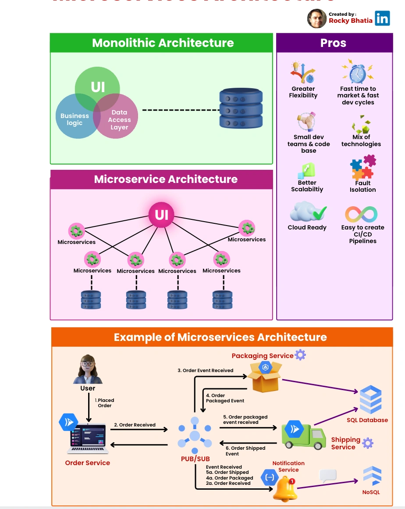
Benefits of Micro services
- Increased Agility: Micro services allow teams to develop, test, and deploy services independently, speeding up the release cycle and enabling more frequent updates and improvements.
- Scalability: Individual components can be scaled independently, allowing for more efficient use of resources and improving application performance during varying loads.
- Resilience: Failure in one service doesn’t necessarily bring down the entire system, as services are isolated and can be designed to handle failures gracefully.
- Technological Diversity: Teams can choose the best technology stack for each service based on its specific requirements, rather than being locked into a single technology for the entire application.
- Deployment Flexibility: Micro services can be deployed across multiple servers or cloud environments to enhance availability and reduce latency for endusers.
- Easier Maintenance and Understanding: Smaller codebases and service scopes make it easier for new developers to understand and for teams to maintain and update code.
- Improved Fault Isolation: Issues can be isolated and addressed in specific services without impacting the functionality of others, leading to more stable and reliable applications.
- Optimised for Continuous Delivery and Deployment: Micro services fit well with CI/CD practices, enabling automated testing and deployment, which further accelerates development cycles and reduces risk.
- Decentralised Governance: Teams have more autonomy over the services they manage, allowing for faster decision making and innovation.
- Efficient Resource Utilisation: Services can be deployed in containers that utilise system resources more efficiently, leading to cost savings in infrastructure.
Components required to build microservice architecture
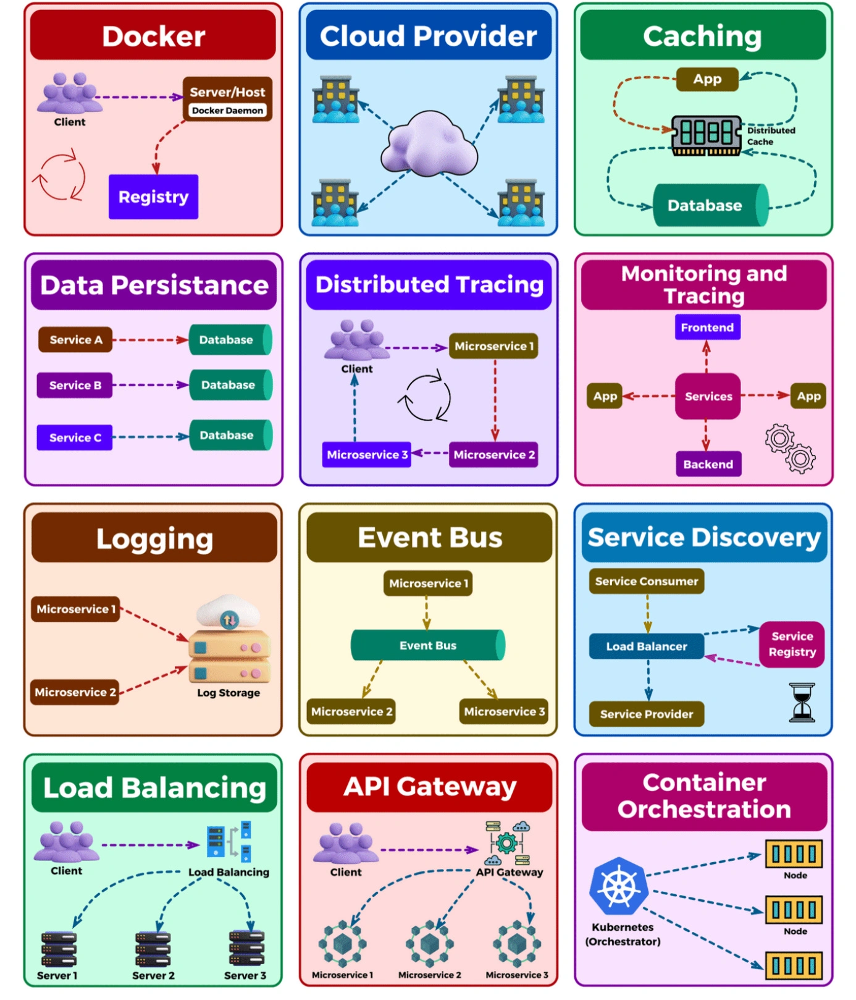
Lets try to understand the components which are required to build the microservice architecture
1.Containerisation: Start with understanding containers, which
package code and dependencies for consistent deployment.
2. Container Orchestration: Learn container orchestration
tools for efficient management, scaling, and networking of
containers.
3. Load Balancing: Explore load balancers to
distribute network or app traffic across servers for scalability and
reliability.
4. Monitoring and Alerting: Implement
monitoring solutions to track application functionality, performance,
and communication.
5. Distributed Tracing: Understand
distributed tracing tools to debug and trace requests across micro
services.
6. Message Brokers: Learn how message brokers
facilitate communication between applications, systems, and
services.
7. Databases: Explore data storage techniques
to persist data needed for further processes or reporting.
8. Caching: Implement caching to reduce latency in
microservice communication.
9. Cloud Service
Providers: Familiarise yourself with third-party cloud services
for infrastructure, application, and storage needs.
10. API
Management: Dive into API design, publishing, documentation, and
security in a secure environment.
11. Application
Gateway: Understand application gateways for network security
and filtering of incoming traffic.
12. Service Registry:
Learn about service registries to track available instances of each
microservice.
Microservice Lifecycle: From Development to Production
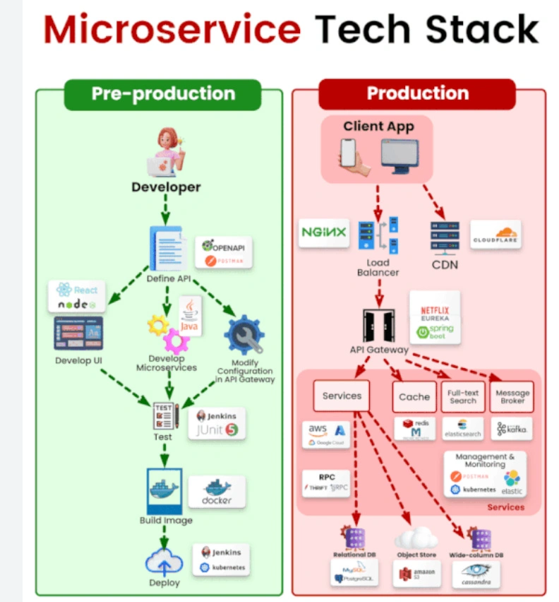
In a microservice architecture, the development, deployment, and management of services are key components of ensuring the reliability, scalability, and performance of the overall system. This approach to software development emphasises breaking down complex applications into smaller, independently deployable services, each responsible for specific business functions.
However, to effectively implement a microservice architecture, a structured workflow encompassing pre-production and production stages is essential.
Pre-Production Steps:
1. Development : Developers write and test code for micro services and test them in their development environments.
2. Configuration Management : Configuration settings for micro services are adjusted and tested alongside development.
3. CI/CD Setup : Continuous Integration/Continuous Deployment pipelines are configured to automate testing, building, and deployment processes.
4. Pre-Deployment Checks : A pre-deployment step is introduced to ensure that necessary checks or tasks are completed before deploying changes to production. This may include automated tests, code quality checks, or security scans.
Production Steps:
1. Deployment : Changes are deployed to production using CI/CD pipelines.
2. Load Balancer Configuration : Load balancers are configured to distribute incoming traffic across multiple instances of micro services.
3. CDN Integration : CDN integration is set up to cache static content and improve content delivery performance.
4. API Gateway Configuration : API gateway is configured to manage and secure access to microservices.
5. Caching Setup : Caching mechanisms are implemented to store frequently accessed data and reduce latency.
6. Messaging System Configuration : Messaging systems are configured for asynchronous communication between micro services.
7. Monitoring Implementation : Monitoring tools are set up to monitor the health, performance, and behaviour of micro services in real-time.
8. Object Store Integration : Integration with object stores is established to store and retrieve large volumes of unstructured data efficiently.
9. Wide Column Store or Linked Data Integration : Integration with databases optimised for storing large amounts of semi-structured or unstructured data is set up.
By following these structured steps, organisations can effectively manage the development, deployment, and maintenance of micro services, ensuring they meet quality standards, performance requirements, and business objectives, can you please add your comments if i have missed ?
Best Practices for Microservice Architecture
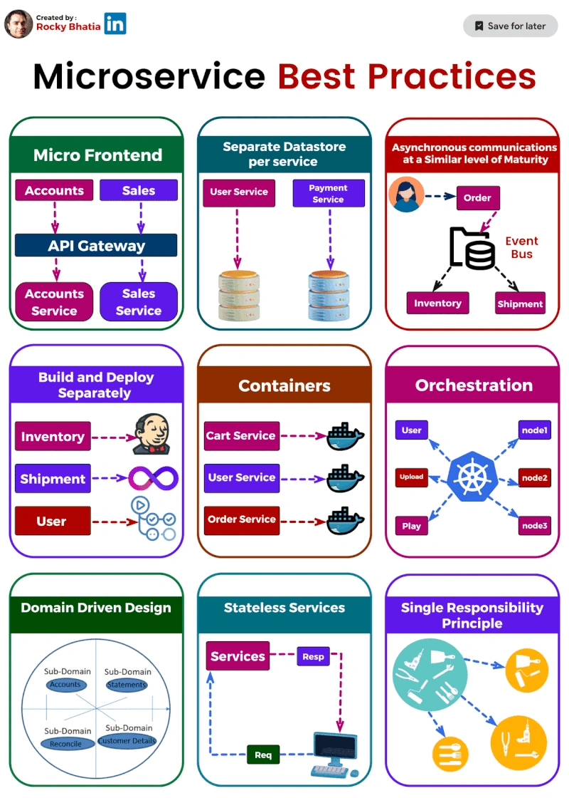
Here are some best practices:
Single Responsibility: Each
microservice should have one purpose, making it easier to manage.
Separate Data Store: Isolate data storage per microservice to
avoid cross-service impact.
Asynchronous Communication: Use
patterns like message queues to decouple services.
Containerisation: Package micro services with Docker for
consistency and scalability.
Orchestration: Use Kubernetes
for load balancing and monitoring.
Build and Deploy
Separation: Keep these processes distinct to ensure smooth
deployments.
Domain-Driven Design (DDD): Define micro
services around specific business capabilities.
Stateless
Services: Keep services stateless for easier scaling.
Micro Frontends: Break down UIs into independently
deployable components.
Additional practices include robust
Monitoring and Observability, Security, Automated Testing,
Versioning, and thorough Documentation.
Conclusion :
Just like Netflix and Amazon, many of the world’s most popular companies rely on micro services to stay ahead in the fast-moving tech world. With the ability to scale effortlessly, update faster, and improve system reliability, microservices have become the go-to architecture for building modern, high-performance applications. Embrace micro services, and you’re not just keeping up with the trends—you’re building a system that can handle anything the future throws at it!
Outline
1. Introduction
- Importance of mastering data structures in tech
- Overview of the 8 essential data structures
2. B-Tree: Your Go-To for Organising and Searching Massive Datasets
- What is a B-Tree?
- How B-Trees work
- Real-world analogy: A library’s catalog system
- Impact of B-Trees on databases and file systems
3. Hash Table: The Champion of Lightning-Fast Data Retrieval
- What is a Hash Table?
- Key-value pair structure
- Real-world analogy: A well-organized filing cabinet
- Applications in caching, symbol tables, and databases
4. Trie: Master of Handling Dynamic Data and Hierarchical Structures
- What is a Trie?
- Structure and function of Tries
- Real-world analogy: A language dictionary
- Uses in autocomplete features and prefix-based searches
5. Bloom Filter: The Space-Saving Detective of the Data World
- What is a Bloom Filter?
- How Bloom Filters work
- Real-world analogy: A detective’s quick decision-making process
- Applications in spell check, caching, and network routers
6. Inverted Index: The Secret Weapon of Search Engines
- What is an Inverted Index?
- How Inverted Indexes function
- Real-world analogy: An index in the back of a book
- Role in information retrieval systems and search engines
7. Skip List: The Versatile Champion of Fast Searching, Insertion, and Deletion
- What is a Skip List?
- How Skip Lists improve performance
- Real-world analogy: A well-designed game strategy
- Uses in in-memory databases and priority queues
8. Log-Structured Merge (LSM) Tree: The Write-Intensive Workload Warrior
- What is an LSM Tree?
- Structure and benefits of LSM Trees
- Real-world analogy: Optimising a high-traffic intersection
- Applications in key-value stores and distributed databases
9. SSTable (Sorted String Table): The Persistent Storage Superhero
- What is an SSTable?
- How SSTables enhance data storage
- Real-world analogy: Organising books by title in a library
- Uses in distributed environments like Apache Cassandra
10. Conclusion
- Recap of the importance of these data structures
- Encouragement to explore, innovate, and conquer tech challenges
11. FAQs
- What is the most important data structure to learn first?
- How do B-Trees differ from Binary Trees?
- Why are Hash Tables so efficient?
- Where are Bloom Filters commonly used?
- How does mastering these data structures impact career growth?
Introduction
In the fast-paced world of technology, understanding data structures is like having a secret weapon up your sleeve. Whether you're tackling complex coding challenges, Optimising system performance, or designing scalable applications, mastering key data structures can make all the difference. Today, we’re diving into eight essential data structures that every tech professional should know. Each of these structures has its own unique strengths, and when used correctly, they can help you conquer any tech challenge that comes your way.
B-Tree: Your Go-To for Organising and Searching Massive Datasets
What is a B-Tree?
A B-Tree is a self-balancing tree data structure that maintains sorted data and allows for efficient insertion, deletion, and search operations. It’s particularly useful for Organising large datasets in databases and file systems.
How B-Trees Work
B-Trees work by keeping data sorted and balanced across multiple levels of nodes. Each node contains a range of keys and can have multiple child nodes, which helps in maintaining a balanced structure. This ensures that operations like search, insert, and delete are performed efficiently, even with large datasets.
Real-World Analogy: A Library’s Catalog System
Imagine walking into a library with thousands of books. Without a catalog system, finding a specific book would be a nightmare. A B-Tree is like that catalog system, Organising books (or data) in such a way that you can quickly locate what you need.
Impact of B-Trees on Databases and File Systems
B-Trees are foundational for systems that require rapid data retrieval and insertion, such as databases and file systems. They are designed to minimise disk reads and writes, making them ideal for storage systems handling large volumes of information.
Hash Table: The Champion of Lightning-Fast Data Retrieval
What is a Hash Table?
A Hash Table is a data structure that maps keys to values using a hash function. This function takes an input (the key) and returns a unique index in an array where the corresponding value is stored.
Key-Value Pair Structure
The beauty of Hash Tables lies in their simplicity. You can think of them as a well-organised filing cabinet where each file (value) is labeled with a unique identifier (key). This allows for lightning-fast retrieval of information.
Real-World Analogy: A Well-Organised Filing Cabinet
Picture a filing cabinet with labeled folders. When you need a document, you simply look for the label, open the folder, and there it is. Hash Tables work the same way, ensuring quick and efficient access to your data.
Applications in Caching, Symbol Tables, and Databases
Hash Tables are widely used in applications that require fast lookups, such as caching, symbol tables, and databases. Their ability to provide constant-time data retrieval makes them indispensable in many systems.
Trie: Master of Handling Dynamic Data and Hierarchical Structures
What is a Trie?
A Trie, also known as a prefix tree, is a specialised data structure used to store a dynamic set of strings. It’s particularly effective for tasks like autocomplete, spell check, and searching for words with a common prefix.
Structure and Function of Tries
Tries organise data hierarchically, with each node representing a character in a string. The structure allows for efficient insertion and search operations, especially when dealing with large datasets of strings.
Real-World Analogy: A Language Dictionary
Think of a Trie as a language dictionary. When you look up a word, you start with the first letter, then the second, and so on, until you find the word you need. This hierarchical approach makes it easy to handle dynamic data.
Uses in Autocomplete Features and Prefix-Based Searches
Tries are the backbone of many autocomplete systems. By efficiently managing dynamic data, they enable quick and accurate suggestions as users type, enhancing the user experience in applications.
Bloom Filter: The Space-Saving Detective of the Data World
What is a Bloom Filter?
A Bloom Filter is a probabilistic data structure that efficiently tests whether an element is part of a set. While it may occasionally give false positives, it never gives false negatives, making it useful for applications where memory space is limited.
How Bloom Filters Work
Bloom Filters use multiple hash functions to map elements to a bit array. When checking if an element is in the set, the filter looks at the corresponding bits. If all bits are set to 1, the element might be in the set; if not, it definitely isn’t.
Real-World Analogy: A Detective’s Quick Decision-Making Process
Imagine a detective making quick decisions based on limited evidence. A Bloom Filter works similarly, quickly determining if something is likely present without needing to be 100% sure.
Applications in Spell Check, Caching, and Network Routers
Bloom Filters are perfect for applications like spell check, where quick membership tests are needed without using much memory. They’re also used in caching systems and network routers for efficient data management.
Inverted Index: The Secret Weapon of Search Engines
What is an Inverted Index?
An Inverted Index is a data structure that maps words to their locations in a document or a set of documents. It’s the backbone of search engines, enabling fast and accurate full-text searches.
How Inverted Indexes Function
Inverted Indexes work by creating a list of words and their associated documents. When you search for a word, the index quickly retrieves the documents that contain it, allowing for fast information retrieval.
Real-World Analogy: An Index in the Back of a Book
Think of an Inverted Index like the index at the back of a book. Instead of reading the whole book to find a topic, you simply look it up in the index and go straight to the relevant pages.
Role in Information Retrieval Systems and Search Engines
Inverted Indexes are critical for search engines like Google, where they enable lightning-fast searches across billions of web pages. Without them, finding information quickly and accurately would be impossible.
Skip List: The Versatile Champion of Fast Searching, Insertion, and Deletion
What is a Skip List?
A Skip List is a data structure that allows for fast search, insertion, and deletion operations by maintaining multiple layers of linked lists. It’s a versatile alternative to balanced trees, offering similar performance with less complexity.
How Skip Lists Improve Performance
Skip Lists use a hierarchy of linked lists to skip over large portions of data, reducing the time it takes to find an element. This makes them faster than traditional linked lists while maintaining simplicity.
Real-World Analogy: A Well-Designed Game Strategy
Imagine playing a game where you can skip certain levels if you have the right strategy. Skip Lists do the same, allowing you to skip over unnecessary data to get to what you need faster.
Uses in In-Memory Databases and Priority Queues
Skip Lists are commonly used in in-memory databases and priority queues, where they balance simplicity and efficiency. Their ability to handle dynamic datasets makes them a popular choice for many applications.
Log-Structured Merge (LSM) Tree: The Write-Intensive Workload Warrior
What is an LSM Tree?
A Log-Structured Merge (LSM) Tree is a data structure designed for write-heavy workloads. It optimises data storage by writing sequentially to disk and periodically merging data to maintain efficiency.
Structure and Benefits of LSM Trees
LSM Trees store data in levels, with newer data at the top. As data accumulates, it’s periodically merged and compacted, ensuring that reads remain fast even as the dataset grows.
Real-World Analogy: Optimising a High-Traffic Intersection
Think of an LSM Tree like a high-traffic intersection that’s optimised to handle heavy loads efficiently. By managing the flow of data carefully, it ensures that performance remains high, even under pressure.
Applications in Key-Value Stores and Distributed Databases
LSM Trees are ideal for key-value stores and distributed databases where write operations dominate. Their ability to handle large volumes of writes without sacrificing read performance makes them essential for modern data storage systems.
SSTable (Sorted String Table): The Persistent Storage Superhero
What is an SSTable?
An SSTable is a persistent, immutable data structure used for storing large datasets. It’s sorted and optimized for quick reads and writes, making it a key component in distributed systems like Apache Cassandra.
How SSTables Enhance Data Storage
SSTables store data in a sorted order, which allows for fast sequential reads and efficient use of storage space. They are immutable, meaning once data is written, it cannot be changed, ensuring consistency and reliability.
Real-World Analogy: Organising Books by Title in a Library
Imagine a library where all the books are sorted by title. When you need a book, you can quickly find it because everything is in order. SSTables work similarly, ensuring that data is always easy to find and retrieve.
Uses in Distributed Environments Like Apache Cassandra
SSTables are crucial for distributed environments where data consistency and speed are paramount. In systems like Apache Cassandra, they provide the backbone for scalable and reliable data storage.